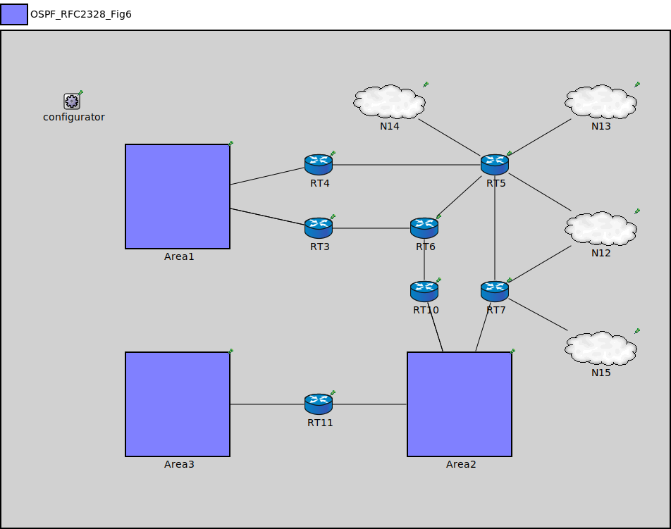

Package: inet.examples.ospfv2.fulltest
OSPF_RFC2328_Fig6
network(no description)
Usage diagram
The following diagram shows usage relationships between types. Unresolved types are missing from the diagram.
Properties
| Name | Value | Description |
|---|---|---|
| isNetwork | ||
| display | p=10,10;b=704,560 |
Unassigned submodule parameters
| Name | Type | Default value | Description |
|---|---|---|---|
| Area1.RT1.status.initialStatus | string | "UP" |
TODO @signal, @statistic |
| Area1.RT1.pcapRecorder.verbose | bool | true |
whether to log packets on the module output |
| Area1.RT1.pcapRecorder.pcapFile | string | "" |
the PCAP file to be written |
| Area1.RT1.pcapRecorder.fileFormat | string | "pcapng" | |
| Area1.RT1.pcapRecorder.snaplen | int | 65535 |
maximum number of bytes to record per packet |
| Area1.RT1.pcapRecorder.dumpBadFrames | bool | true |
enable dump of frames with hasBitError |
| Area1.RT1.pcapRecorder.moduleNamePatterns | string | "wlan[*] eth[*] ppp[*]" |
space-separated list of sibling module names to listen on |
| Area1.RT1.pcapRecorder.sendingSignalNames | string | "packetSentToLower" |
space-separated list of outbound packet signals to subscribe to |
| Area1.RT1.pcapRecorder.receivingSignalNames | string | "packetReceivedFromLower" |
space-separated list of inbound packet signals to subscribe to |
| Area1.RT1.pcapRecorder.dumpProtocols | string | "ethernetmac ppp ieee80211mac" |
space-separated list of protocol names as defined in the Protocol class |
| Area1.RT1.pcapRecorder.packetFilter | object | "*" |
which packets are considered, matches all packets by default |
| Area1.RT1.pcapRecorder.helpers | string | "" |
usable PcapRecorder::IHelper helpers for accept packettype and store/convert packet as specified linktype currently available: "inet::AckingMacToEthernetPcapRecorderHelper" |
| Area1.RT1.pcapRecorder.alwaysFlush | bool | false |
flush the pcapFile after each write to ensure that all packets are captured in case of a crash |
| Area1.RT1.pcapRecorder.displayStringTextFormat | string | "rec: %n pks" | |
| Area1.RT1.interfaceTable.displayAddresses | bool | false |
whether to display IP addresses on links |
| Area1.RT1.cb.displayStringTextFormat | string | "processed %p pk (%l)" |
determines the text that is written on top of the submodule |
| Area1.RT1.cb.forwardServiceRegistration | bool | true | |
| Area1.RT1.cb.forwardProtocolRegistration | bool | true | |
| Area1.RT1.bl.displayStringTextFormat | string | "processed %p pk (%l)" |
determines the text that is written on top of the submodule |
| Area1.RT1.bl.forwardServiceRegistration | bool | true | |
| Area1.RT1.bl.forwardProtocolRegistration | bool | true | |
| Area1.RT1.li.displayStringTextFormat | string | "processed %p pk (%l)" |
determines the text that is written on top of the submodule |
| Area1.RT1.li.forwardServiceRegistration | bool | true | |
| Area1.RT1.li.forwardProtocolRegistration | bool | true | |
| Area1.RT1.eth.bitrate | double | ||
| Area1.RT1.nl.displayStringTextFormat | string | "processed %p pk (%l)" |
determines the text that is written on top of the submodule |
| Area1.RT1.nl.forwardServiceRegistration | bool | true | |
| Area1.RT1.nl.forwardProtocolRegistration | bool | true | |
| Area1.RT1.tn.displayStringTextFormat | string | "processed %p pk (%l)" |
determines the text that is written on top of the submodule |
| Area1.RT1.tn.forwardServiceRegistration | bool | true | |
| Area1.RT1.tn.forwardProtocolRegistration | bool | true | |
| Area1.RT1.at.displayStringTextFormat | string | "processed %p pk (%l)" |
determines the text that is written on top of the submodule |
| Area1.RT1.at.forwardServiceRegistration | bool | true | |
| Area1.RT1.at.forwardProtocolRegistration | bool | true | |
| Area1.RT1.bgp.interfaceTableModule | string |
The path to the InterfaceTable module |
|
| Area1.RT1.bgp.routingTableModule | string | ||
| Area1.RT1.bgp.ospfRoutingModule | string | parent.hasOspf ? "^.ospf" : "" | |
| Area1.RT2.status.initialStatus | string | "UP" |
TODO @signal, @statistic |
| Area1.RT2.pcapRecorder.verbose | bool | true |
whether to log packets on the module output |
| Area1.RT2.pcapRecorder.pcapFile | string | "" |
the PCAP file to be written |
| Area1.RT2.pcapRecorder.fileFormat | string | "pcapng" | |
| Area1.RT2.pcapRecorder.snaplen | int | 65535 |
maximum number of bytes to record per packet |
| Area1.RT2.pcapRecorder.dumpBadFrames | bool | true |
enable dump of frames with hasBitError |
| Area1.RT2.pcapRecorder.moduleNamePatterns | string | "wlan[*] eth[*] ppp[*]" |
space-separated list of sibling module names to listen on |
| Area1.RT2.pcapRecorder.sendingSignalNames | string | "packetSentToLower" |
space-separated list of outbound packet signals to subscribe to |
| Area1.RT2.pcapRecorder.receivingSignalNames | string | "packetReceivedFromLower" |
space-separated list of inbound packet signals to subscribe to |
| Area1.RT2.pcapRecorder.dumpProtocols | string | "ethernetmac ppp ieee80211mac" |
space-separated list of protocol names as defined in the Protocol class |
| Area1.RT2.pcapRecorder.packetFilter | object | "*" |
which packets are considered, matches all packets by default |
| Area1.RT2.pcapRecorder.helpers | string | "" |
usable PcapRecorder::IHelper helpers for accept packettype and store/convert packet as specified linktype currently available: "inet::AckingMacToEthernetPcapRecorderHelper" |
| Area1.RT2.pcapRecorder.alwaysFlush | bool | false |
flush the pcapFile after each write to ensure that all packets are captured in case of a crash |
| Area1.RT2.pcapRecorder.displayStringTextFormat | string | "rec: %n pks" | |
| Area1.RT2.interfaceTable.displayAddresses | bool | false |
whether to display IP addresses on links |
| Area1.RT2.cb.displayStringTextFormat | string | "processed %p pk (%l)" |
determines the text that is written on top of the submodule |
| Area1.RT2.cb.forwardServiceRegistration | bool | true | |
| Area1.RT2.cb.forwardProtocolRegistration | bool | true | |
| Area1.RT2.bl.displayStringTextFormat | string | "processed %p pk (%l)" |
determines the text that is written on top of the submodule |
| Area1.RT2.bl.forwardServiceRegistration | bool | true | |
| Area1.RT2.bl.forwardProtocolRegistration | bool | true | |
| Area1.RT2.li.displayStringTextFormat | string | "processed %p pk (%l)" |
determines the text that is written on top of the submodule |
| Area1.RT2.li.forwardServiceRegistration | bool | true | |
| Area1.RT2.li.forwardProtocolRegistration | bool | true | |
| Area1.RT2.eth.bitrate | double | ||
| Area1.RT2.nl.displayStringTextFormat | string | "processed %p pk (%l)" |
determines the text that is written on top of the submodule |
| Area1.RT2.nl.forwardServiceRegistration | bool | true | |
| Area1.RT2.nl.forwardProtocolRegistration | bool | true | |
| Area1.RT2.tn.displayStringTextFormat | string | "processed %p pk (%l)" |
determines the text that is written on top of the submodule |
| Area1.RT2.tn.forwardServiceRegistration | bool | true | |
| Area1.RT2.tn.forwardProtocolRegistration | bool | true | |
| Area1.RT2.at.displayStringTextFormat | string | "processed %p pk (%l)" |
determines the text that is written on top of the submodule |
| Area1.RT2.at.forwardServiceRegistration | bool | true | |
| Area1.RT2.at.forwardProtocolRegistration | bool | true | |
| Area1.RT2.bgp.interfaceTableModule | string |
The path to the InterfaceTable module |
|
| Area1.RT2.bgp.routingTableModule | string | ||
| Area1.RT2.bgp.ospfRoutingModule | string | parent.hasOspf ? "^.ospf" : "" | |
| Area1.N1.hub.macTable.agingTime | double | ||
| Area1.N1.hub.macTable.forwardingTableFile | string | ||
| Area1.N1.hub.interfaceTable.displayAddresses | bool | false |
whether to display IP addresses on links |
| Area1.N1.hub.l2NodeConfigurator.interfaceTableModule | string | ||
| Area1.N1.hub.l2NodeConfigurator.l2ConfiguratorModule | string | "l2NetworkConfigurator" |
the absolute path to the ~L2NetworkConfigurator; use "" if there is no configurator |
| Area1.N1.hub.status.initialStatus | string | "UP" |
TODO @signal, @statistic |
| Area1.N1.hub.pcapRecorder.verbose | bool | true |
whether to log packets on the module output |
| Area1.N1.hub.pcapRecorder.pcapFile | string | "" |
the PCAP file to be written |
| Area1.N1.hub.pcapRecorder.fileFormat | string | "pcapng" | |
| Area1.N1.hub.pcapRecorder.snaplen | int | 65535 |
maximum number of bytes to record per packet |
| Area1.N1.hub.pcapRecorder.dumpBadFrames | bool | true |
enable dump of frames with hasBitError |
| Area1.N1.hub.pcapRecorder.moduleNamePatterns | string | "wlan[*] eth[*] ppp[*]" |
space-separated list of sibling module names to listen on |
| Area1.N1.hub.pcapRecorder.sendingSignalNames | string | "packetSentToLower" |
space-separated list of outbound packet signals to subscribe to |
| Area1.N1.hub.pcapRecorder.receivingSignalNames | string | "packetReceivedFromLower" |
space-separated list of inbound packet signals to subscribe to |
| Area1.N1.hub.pcapRecorder.dumpProtocols | string | "ethernetmac ppp ieee80211mac" |
space-separated list of protocol names as defined in the Protocol class |
| Area1.N1.hub.pcapRecorder.packetFilter | object | "*" |
which packets are considered, matches all packets by default |
| Area1.N1.hub.pcapRecorder.helpers | string | "" |
usable PcapRecorder::IHelper helpers for accept packettype and store/convert packet as specified linktype currently available: "inet::AckingMacToEthernetPcapRecorderHelper" |
| Area1.N1.hub.pcapRecorder.alwaysFlush | bool | false |
flush the pcapFile after each write to ensure that all packets are captured in case of a crash |
| Area1.N1.hub.pcapRecorder.displayStringTextFormat | string | "rec: %n pks" | |
| Area1.N1.hub.stp.helloTime | double | ||
| Area1.N1.hub.stp.forwardDelay | double | ||
| Area1.N1.hub.stp.maxAge | double | ||
| Area1.N1.hub.stp.bridgePriority | int | ||
| Area1.N1.hub.stp.visualize | bool | ||
| Area1.N1.hub.sc.displayStringTextFormat | string | "processed %p pk (%l)" |
determines the text that is written on top of the submodule |
| Area1.N1.hub.sc.forwardServiceRegistration | bool | true | |
| Area1.N1.hub.sc.forwardProtocolRegistration | bool | true | |
| Area1.N1.hub.cb.displayStringTextFormat | string | "processed %p pk (%l)" |
determines the text that is written on top of the submodule |
| Area1.N1.hub.cb.forwardServiceRegistration | bool | true | |
| Area1.N1.hub.cb.forwardProtocolRegistration | bool | true | |
| Area1.N1.hub.bl.displayStringTextFormat | string | "processed %p pk (%l)" |
determines the text that is written on top of the submodule |
| Area1.N1.hub.bl.forwardServiceRegistration | bool | true | |
| Area1.N1.hub.bl.forwardProtocolRegistration | bool | true | |
| Area1.N1.hub.li.displayStringTextFormat | string | "processed %p pk (%l)" |
determines the text that is written on top of the submodule |
| Area1.N1.hub.li.forwardServiceRegistration | bool | true | |
| Area1.N1.hub.li.forwardProtocolRegistration | bool | true | |
| Area1.N1.hub.eth.bitrate | double | ||
| Area1.N1.host.status.initialStatus | string | "UP" |
TODO @signal, @statistic |
| Area1.N1.host.pcapRecorder.verbose | bool | true |
whether to log packets on the module output |
| Area1.N1.host.pcapRecorder.pcapFile | string | "" |
the PCAP file to be written |
| Area1.N1.host.pcapRecorder.fileFormat | string | "pcapng" | |
| Area1.N1.host.pcapRecorder.snaplen | int | 65535 |
maximum number of bytes to record per packet |
| Area1.N1.host.pcapRecorder.dumpBadFrames | bool | true |
enable dump of frames with hasBitError |
| Area1.N1.host.pcapRecorder.moduleNamePatterns | string | "wlan[*] eth[*] ppp[*]" |
space-separated list of sibling module names to listen on |
| Area1.N1.host.pcapRecorder.sendingSignalNames | string | "packetSentToLower" |
space-separated list of outbound packet signals to subscribe to |
| Area1.N1.host.pcapRecorder.receivingSignalNames | string | "packetReceivedFromLower" |
space-separated list of inbound packet signals to subscribe to |
| Area1.N1.host.pcapRecorder.dumpProtocols | string | "ethernetmac ppp ieee80211mac" |
space-separated list of protocol names as defined in the Protocol class |
| Area1.N1.host.pcapRecorder.packetFilter | object | "*" |
which packets are considered, matches all packets by default |
| Area1.N1.host.pcapRecorder.helpers | string | "" |
usable PcapRecorder::IHelper helpers for accept packettype and store/convert packet as specified linktype currently available: "inet::AckingMacToEthernetPcapRecorderHelper" |
| Area1.N1.host.pcapRecorder.alwaysFlush | bool | false |
flush the pcapFile after each write to ensure that all packets are captured in case of a crash |
| Area1.N1.host.pcapRecorder.displayStringTextFormat | string | "rec: %n pks" | |
| Area1.N1.host.interfaceTable.displayAddresses | bool | false |
whether to display IP addresses on links |
| Area1.N1.host.cb.displayStringTextFormat | string | "processed %p pk (%l)" |
determines the text that is written on top of the submodule |
| Area1.N1.host.cb.forwardServiceRegistration | bool | true | |
| Area1.N1.host.cb.forwardProtocolRegistration | bool | true | |
| Area1.N1.host.bl.displayStringTextFormat | string | "processed %p pk (%l)" |
determines the text that is written on top of the submodule |
| Area1.N1.host.bl.forwardServiceRegistration | bool | true | |
| Area1.N1.host.bl.forwardProtocolRegistration | bool | true | |
| Area1.N1.host.li.displayStringTextFormat | string | "processed %p pk (%l)" |
determines the text that is written on top of the submodule |
| Area1.N1.host.li.forwardServiceRegistration | bool | true | |
| Area1.N1.host.li.forwardProtocolRegistration | bool | true | |
| Area1.N1.host.eth.bitrate | double | ||
| Area1.N1.host.nl.displayStringTextFormat | string | "processed %p pk (%l)" |
determines the text that is written on top of the submodule |
| Area1.N1.host.nl.forwardServiceRegistration | bool | true | |
| Area1.N1.host.nl.forwardProtocolRegistration | bool | true | |
| Area1.N1.host.tn.displayStringTextFormat | string | "processed %p pk (%l)" |
determines the text that is written on top of the submodule |
| Area1.N1.host.tn.forwardServiceRegistration | bool | true | |
| Area1.N1.host.tn.forwardProtocolRegistration | bool | true | |
| Area1.N1.host.at.displayStringTextFormat | string | "processed %p pk (%l)" |
determines the text that is written on top of the submodule |
| Area1.N1.host.at.forwardServiceRegistration | bool | true | |
| Area1.N1.host.at.forwardProtocolRegistration | bool | true | |
| Area1.N2.hub.macTable.agingTime | double | ||
| Area1.N2.hub.macTable.forwardingTableFile | string | ||
| Area1.N2.hub.interfaceTable.displayAddresses | bool | false |
whether to display IP addresses on links |
| Area1.N2.hub.l2NodeConfigurator.interfaceTableModule | string | ||
| Area1.N2.hub.l2NodeConfigurator.l2ConfiguratorModule | string | "l2NetworkConfigurator" |
the absolute path to the ~L2NetworkConfigurator; use "" if there is no configurator |
| Area1.N2.hub.status.initialStatus | string | "UP" |
TODO @signal, @statistic |
| Area1.N2.hub.pcapRecorder.verbose | bool | true |
whether to log packets on the module output |
| Area1.N2.hub.pcapRecorder.pcapFile | string | "" |
the PCAP file to be written |
| Area1.N2.hub.pcapRecorder.fileFormat | string | "pcapng" | |
| Area1.N2.hub.pcapRecorder.snaplen | int | 65535 |
maximum number of bytes to record per packet |
| Area1.N2.hub.pcapRecorder.dumpBadFrames | bool | true |
enable dump of frames with hasBitError |
| Area1.N2.hub.pcapRecorder.moduleNamePatterns | string | "wlan[*] eth[*] ppp[*]" |
space-separated list of sibling module names to listen on |
| Area1.N2.hub.pcapRecorder.sendingSignalNames | string | "packetSentToLower" |
space-separated list of outbound packet signals to subscribe to |
| Area1.N2.hub.pcapRecorder.receivingSignalNames | string | "packetReceivedFromLower" |
space-separated list of inbound packet signals to subscribe to |
| Area1.N2.hub.pcapRecorder.dumpProtocols | string | "ethernetmac ppp ieee80211mac" |
space-separated list of protocol names as defined in the Protocol class |
| Area1.N2.hub.pcapRecorder.packetFilter | object | "*" |
which packets are considered, matches all packets by default |
| Area1.N2.hub.pcapRecorder.helpers | string | "" |
usable PcapRecorder::IHelper helpers for accept packettype and store/convert packet as specified linktype currently available: "inet::AckingMacToEthernetPcapRecorderHelper" |
| Area1.N2.hub.pcapRecorder.alwaysFlush | bool | false |
flush the pcapFile after each write to ensure that all packets are captured in case of a crash |
| Area1.N2.hub.pcapRecorder.displayStringTextFormat | string | "rec: %n pks" | |
| Area1.N2.hub.stp.helloTime | double | ||
| Area1.N2.hub.stp.forwardDelay | double | ||
| Area1.N2.hub.stp.maxAge | double | ||
| Area1.N2.hub.stp.bridgePriority | int | ||
| Area1.N2.hub.stp.visualize | bool | ||
| Area1.N2.hub.sc.displayStringTextFormat | string | "processed %p pk (%l)" |
determines the text that is written on top of the submodule |
| Area1.N2.hub.sc.forwardServiceRegistration | bool | true | |
| Area1.N2.hub.sc.forwardProtocolRegistration | bool | true | |
| Area1.N2.hub.cb.displayStringTextFormat | string | "processed %p pk (%l)" |
determines the text that is written on top of the submodule |
| Area1.N2.hub.cb.forwardServiceRegistration | bool | true | |
| Area1.N2.hub.cb.forwardProtocolRegistration | bool | true | |
| Area1.N2.hub.bl.displayStringTextFormat | string | "processed %p pk (%l)" |
determines the text that is written on top of the submodule |
| Area1.N2.hub.bl.forwardServiceRegistration | bool | true | |
| Area1.N2.hub.bl.forwardProtocolRegistration | bool | true | |
| Area1.N2.hub.li.displayStringTextFormat | string | "processed %p pk (%l)" |
determines the text that is written on top of the submodule |
| Area1.N2.hub.li.forwardServiceRegistration | bool | true | |
| Area1.N2.hub.li.forwardProtocolRegistration | bool | true | |
| Area1.N2.hub.eth.bitrate | double | ||
| Area1.N2.host.status.initialStatus | string | "UP" |
TODO @signal, @statistic |
| Area1.N2.host.pcapRecorder.verbose | bool | true |
whether to log packets on the module output |
| Area1.N2.host.pcapRecorder.pcapFile | string | "" |
the PCAP file to be written |
| Area1.N2.host.pcapRecorder.fileFormat | string | "pcapng" | |
| Area1.N2.host.pcapRecorder.snaplen | int | 65535 |
maximum number of bytes to record per packet |
| Area1.N2.host.pcapRecorder.dumpBadFrames | bool | true |
enable dump of frames with hasBitError |
| Area1.N2.host.pcapRecorder.moduleNamePatterns | string | "wlan[*] eth[*] ppp[*]" |
space-separated list of sibling module names to listen on |
| Area1.N2.host.pcapRecorder.sendingSignalNames | string | "packetSentToLower" |
space-separated list of outbound packet signals to subscribe to |
| Area1.N2.host.pcapRecorder.receivingSignalNames | string | "packetReceivedFromLower" |
space-separated list of inbound packet signals to subscribe to |
| Area1.N2.host.pcapRecorder.dumpProtocols | string | "ethernetmac ppp ieee80211mac" |
space-separated list of protocol names as defined in the Protocol class |
| Area1.N2.host.pcapRecorder.packetFilter | object | "*" |
which packets are considered, matches all packets by default |
| Area1.N2.host.pcapRecorder.helpers | string | "" |
usable PcapRecorder::IHelper helpers for accept packettype and store/convert packet as specified linktype currently available: "inet::AckingMacToEthernetPcapRecorderHelper" |
| Area1.N2.host.pcapRecorder.alwaysFlush | bool | false |
flush the pcapFile after each write to ensure that all packets are captured in case of a crash |
| Area1.N2.host.pcapRecorder.displayStringTextFormat | string | "rec: %n pks" | |
| Area1.N2.host.interfaceTable.displayAddresses | bool | false |
whether to display IP addresses on links |
| Area1.N2.host.cb.displayStringTextFormat | string | "processed %p pk (%l)" |
determines the text that is written on top of the submodule |
| Area1.N2.host.cb.forwardServiceRegistration | bool | true | |
| Area1.N2.host.cb.forwardProtocolRegistration | bool | true | |
| Area1.N2.host.bl.displayStringTextFormat | string | "processed %p pk (%l)" |
determines the text that is written on top of the submodule |
| Area1.N2.host.bl.forwardServiceRegistration | bool | true | |
| Area1.N2.host.bl.forwardProtocolRegistration | bool | true | |
| Area1.N2.host.li.displayStringTextFormat | string | "processed %p pk (%l)" |
determines the text that is written on top of the submodule |
| Area1.N2.host.li.forwardServiceRegistration | bool | true | |
| Area1.N2.host.li.forwardProtocolRegistration | bool | true | |
| Area1.N2.host.eth.bitrate | double | ||
| Area1.N2.host.nl.displayStringTextFormat | string | "processed %p pk (%l)" |
determines the text that is written on top of the submodule |
| Area1.N2.host.nl.forwardServiceRegistration | bool | true | |
| Area1.N2.host.nl.forwardProtocolRegistration | bool | true | |
| Area1.N2.host.tn.displayStringTextFormat | string | "processed %p pk (%l)" |
determines the text that is written on top of the submodule |
| Area1.N2.host.tn.forwardServiceRegistration | bool | true | |
| Area1.N2.host.tn.forwardProtocolRegistration | bool | true | |
| Area1.N2.host.at.displayStringTextFormat | string | "processed %p pk (%l)" |
determines the text that is written on top of the submodule |
| Area1.N2.host.at.forwardServiceRegistration | bool | true | |
| Area1.N2.host.at.forwardProtocolRegistration | bool | true | |
| Area1.N3.hub.macTable.agingTime | double | ||
| Area1.N3.hub.macTable.forwardingTableFile | string | ||
| Area1.N3.hub.interfaceTable.displayAddresses | bool | false |
whether to display IP addresses on links |
| Area1.N3.hub.l2NodeConfigurator.interfaceTableModule | string | ||
| Area1.N3.hub.l2NodeConfigurator.l2ConfiguratorModule | string | "l2NetworkConfigurator" |
the absolute path to the ~L2NetworkConfigurator; use "" if there is no configurator |
| Area1.N3.hub.status.initialStatus | string | "UP" |
TODO @signal, @statistic |
| Area1.N3.hub.pcapRecorder.verbose | bool | true |
whether to log packets on the module output |
| Area1.N3.hub.pcapRecorder.pcapFile | string | "" |
the PCAP file to be written |
| Area1.N3.hub.pcapRecorder.fileFormat | string | "pcapng" | |
| Area1.N3.hub.pcapRecorder.snaplen | int | 65535 |
maximum number of bytes to record per packet |
| Area1.N3.hub.pcapRecorder.dumpBadFrames | bool | true |
enable dump of frames with hasBitError |
| Area1.N3.hub.pcapRecorder.moduleNamePatterns | string | "wlan[*] eth[*] ppp[*]" |
space-separated list of sibling module names to listen on |
| Area1.N3.hub.pcapRecorder.sendingSignalNames | string | "packetSentToLower" |
space-separated list of outbound packet signals to subscribe to |
| Area1.N3.hub.pcapRecorder.receivingSignalNames | string | "packetReceivedFromLower" |
space-separated list of inbound packet signals to subscribe to |
| Area1.N3.hub.pcapRecorder.dumpProtocols | string | "ethernetmac ppp ieee80211mac" |
space-separated list of protocol names as defined in the Protocol class |
| Area1.N3.hub.pcapRecorder.packetFilter | object | "*" |
which packets are considered, matches all packets by default |
| Area1.N3.hub.pcapRecorder.helpers | string | "" |
usable PcapRecorder::IHelper helpers for accept packettype and store/convert packet as specified linktype currently available: "inet::AckingMacToEthernetPcapRecorderHelper" |
| Area1.N3.hub.pcapRecorder.alwaysFlush | bool | false |
flush the pcapFile after each write to ensure that all packets are captured in case of a crash |
| Area1.N3.hub.pcapRecorder.displayStringTextFormat | string | "rec: %n pks" | |
| Area1.N3.hub.stp.helloTime | double | ||
| Area1.N3.hub.stp.forwardDelay | double | ||
| Area1.N3.hub.stp.maxAge | double | ||
| Area1.N3.hub.stp.bridgePriority | int | ||
| Area1.N3.hub.stp.visualize | bool | ||
| Area1.N3.hub.sc.displayStringTextFormat | string | "processed %p pk (%l)" |
determines the text that is written on top of the submodule |
| Area1.N3.hub.sc.forwardServiceRegistration | bool | true | |
| Area1.N3.hub.sc.forwardProtocolRegistration | bool | true | |
| Area1.N3.hub.cb.displayStringTextFormat | string | "processed %p pk (%l)" |
determines the text that is written on top of the submodule |
| Area1.N3.hub.cb.forwardServiceRegistration | bool | true | |
| Area1.N3.hub.cb.forwardProtocolRegistration | bool | true | |
| Area1.N3.hub.bl.displayStringTextFormat | string | "processed %p pk (%l)" |
determines the text that is written on top of the submodule |
| Area1.N3.hub.bl.forwardServiceRegistration | bool | true | |
| Area1.N3.hub.bl.forwardProtocolRegistration | bool | true | |
| Area1.N3.hub.li.displayStringTextFormat | string | "processed %p pk (%l)" |
determines the text that is written on top of the submodule |
| Area1.N3.hub.li.forwardServiceRegistration | bool | true | |
| Area1.N3.hub.li.forwardProtocolRegistration | bool | true | |
| Area1.N3.hub.eth.bitrate | double | ||
| Area1.N3.host.status.initialStatus | string | "UP" |
TODO @signal, @statistic |
| Area1.N3.host.pcapRecorder.verbose | bool | true |
whether to log packets on the module output |
| Area1.N3.host.pcapRecorder.pcapFile | string | "" |
the PCAP file to be written |
| Area1.N3.host.pcapRecorder.fileFormat | string | "pcapng" | |
| Area1.N3.host.pcapRecorder.snaplen | int | 65535 |
maximum number of bytes to record per packet |
| Area1.N3.host.pcapRecorder.dumpBadFrames | bool | true |
enable dump of frames with hasBitError |
| Area1.N3.host.pcapRecorder.moduleNamePatterns | string | "wlan[*] eth[*] ppp[*]" |
space-separated list of sibling module names to listen on |
| Area1.N3.host.pcapRecorder.sendingSignalNames | string | "packetSentToLower" |
space-separated list of outbound packet signals to subscribe to |
| Area1.N3.host.pcapRecorder.receivingSignalNames | string | "packetReceivedFromLower" |
space-separated list of inbound packet signals to subscribe to |
| Area1.N3.host.pcapRecorder.dumpProtocols | string | "ethernetmac ppp ieee80211mac" |
space-separated list of protocol names as defined in the Protocol class |
| Area1.N3.host.pcapRecorder.packetFilter | object | "*" |
which packets are considered, matches all packets by default |
| Area1.N3.host.pcapRecorder.helpers | string | "" |
usable PcapRecorder::IHelper helpers for accept packettype and store/convert packet as specified linktype currently available: "inet::AckingMacToEthernetPcapRecorderHelper" |
| Area1.N3.host.pcapRecorder.alwaysFlush | bool | false |
flush the pcapFile after each write to ensure that all packets are captured in case of a crash |
| Area1.N3.host.pcapRecorder.displayStringTextFormat | string | "rec: %n pks" | |
| Area1.N3.host.interfaceTable.displayAddresses | bool | false |
whether to display IP addresses on links |
| Area1.N3.host.cb.displayStringTextFormat | string | "processed %p pk (%l)" |
determines the text that is written on top of the submodule |
| Area1.N3.host.cb.forwardServiceRegistration | bool | true | |
| Area1.N3.host.cb.forwardProtocolRegistration | bool | true | |
| Area1.N3.host.bl.displayStringTextFormat | string | "processed %p pk (%l)" |
determines the text that is written on top of the submodule |
| Area1.N3.host.bl.forwardServiceRegistration | bool | true | |
| Area1.N3.host.bl.forwardProtocolRegistration | bool | true | |
| Area1.N3.host.li.displayStringTextFormat | string | "processed %p pk (%l)" |
determines the text that is written on top of the submodule |
| Area1.N3.host.li.forwardServiceRegistration | bool | true | |
| Area1.N3.host.li.forwardProtocolRegistration | bool | true | |
| Area1.N3.host.eth.bitrate | double | ||
| Area1.N3.host.nl.displayStringTextFormat | string | "processed %p pk (%l)" |
determines the text that is written on top of the submodule |
| Area1.N3.host.nl.forwardServiceRegistration | bool | true | |
| Area1.N3.host.nl.forwardProtocolRegistration | bool | true | |
| Area1.N3.host.tn.displayStringTextFormat | string | "processed %p pk (%l)" |
determines the text that is written on top of the submodule |
| Area1.N3.host.tn.forwardServiceRegistration | bool | true | |
| Area1.N3.host.tn.forwardProtocolRegistration | bool | true | |
| Area1.N3.host.at.displayStringTextFormat | string | "processed %p pk (%l)" |
determines the text that is written on top of the submodule |
| Area1.N3.host.at.forwardServiceRegistration | bool | true | |
| Area1.N3.host.at.forwardProtocolRegistration | bool | true | |
| Area1.N4.hub.macTable.agingTime | double | ||
| Area1.N4.hub.macTable.forwardingTableFile | string | ||
| Area1.N4.hub.interfaceTable.displayAddresses | bool | false |
whether to display IP addresses on links |
| Area1.N4.hub.l2NodeConfigurator.interfaceTableModule | string | ||
| Area1.N4.hub.l2NodeConfigurator.l2ConfiguratorModule | string | "l2NetworkConfigurator" |
the absolute path to the ~L2NetworkConfigurator; use "" if there is no configurator |
| Area1.N4.hub.status.initialStatus | string | "UP" |
TODO @signal, @statistic |
| Area1.N4.hub.pcapRecorder.verbose | bool | true |
whether to log packets on the module output |
| Area1.N4.hub.pcapRecorder.pcapFile | string | "" |
the PCAP file to be written |
| Area1.N4.hub.pcapRecorder.fileFormat | string | "pcapng" | |
| Area1.N4.hub.pcapRecorder.snaplen | int | 65535 |
maximum number of bytes to record per packet |
| Area1.N4.hub.pcapRecorder.dumpBadFrames | bool | true |
enable dump of frames with hasBitError |
| Area1.N4.hub.pcapRecorder.moduleNamePatterns | string | "wlan[*] eth[*] ppp[*]" |
space-separated list of sibling module names to listen on |
| Area1.N4.hub.pcapRecorder.sendingSignalNames | string | "packetSentToLower" |
space-separated list of outbound packet signals to subscribe to |
| Area1.N4.hub.pcapRecorder.receivingSignalNames | string | "packetReceivedFromLower" |
space-separated list of inbound packet signals to subscribe to |
| Area1.N4.hub.pcapRecorder.dumpProtocols | string | "ethernetmac ppp ieee80211mac" |
space-separated list of protocol names as defined in the Protocol class |
| Area1.N4.hub.pcapRecorder.packetFilter | object | "*" |
which packets are considered, matches all packets by default |
| Area1.N4.hub.pcapRecorder.helpers | string | "" |
usable PcapRecorder::IHelper helpers for accept packettype and store/convert packet as specified linktype currently available: "inet::AckingMacToEthernetPcapRecorderHelper" |
| Area1.N4.hub.pcapRecorder.alwaysFlush | bool | false |
flush the pcapFile after each write to ensure that all packets are captured in case of a crash |
| Area1.N4.hub.pcapRecorder.displayStringTextFormat | string | "rec: %n pks" | |
| Area1.N4.hub.stp.helloTime | double | ||
| Area1.N4.hub.stp.forwardDelay | double | ||
| Area1.N4.hub.stp.maxAge | double | ||
| Area1.N4.hub.stp.bridgePriority | int | ||
| Area1.N4.hub.stp.visualize | bool | ||
| Area1.N4.hub.sc.displayStringTextFormat | string | "processed %p pk (%l)" |
determines the text that is written on top of the submodule |
| Area1.N4.hub.sc.forwardServiceRegistration | bool | true | |
| Area1.N4.hub.sc.forwardProtocolRegistration | bool | true | |
| Area1.N4.hub.cb.displayStringTextFormat | string | "processed %p pk (%l)" |
determines the text that is written on top of the submodule |
| Area1.N4.hub.cb.forwardServiceRegistration | bool | true | |
| Area1.N4.hub.cb.forwardProtocolRegistration | bool | true | |
| Area1.N4.hub.bl.displayStringTextFormat | string | "processed %p pk (%l)" |
determines the text that is written on top of the submodule |
| Area1.N4.hub.bl.forwardServiceRegistration | bool | true | |
| Area1.N4.hub.bl.forwardProtocolRegistration | bool | true | |
| Area1.N4.hub.li.displayStringTextFormat | string | "processed %p pk (%l)" |
determines the text that is written on top of the submodule |
| Area1.N4.hub.li.forwardServiceRegistration | bool | true | |
| Area1.N4.hub.li.forwardProtocolRegistration | bool | true | |
| Area1.N4.hub.eth.bitrate | double | ||
| Area1.N4.host.status.initialStatus | string | "UP" |
TODO @signal, @statistic |
| Area1.N4.host.pcapRecorder.verbose | bool | true |
whether to log packets on the module output |
| Area1.N4.host.pcapRecorder.pcapFile | string | "" |
the PCAP file to be written |
| Area1.N4.host.pcapRecorder.fileFormat | string | "pcapng" | |
| Area1.N4.host.pcapRecorder.snaplen | int | 65535 |
maximum number of bytes to record per packet |
| Area1.N4.host.pcapRecorder.dumpBadFrames | bool | true |
enable dump of frames with hasBitError |
| Area1.N4.host.pcapRecorder.moduleNamePatterns | string | "wlan[*] eth[*] ppp[*]" |
space-separated list of sibling module names to listen on |
| Area1.N4.host.pcapRecorder.sendingSignalNames | string | "packetSentToLower" |
space-separated list of outbound packet signals to subscribe to |
| Area1.N4.host.pcapRecorder.receivingSignalNames | string | "packetReceivedFromLower" |
space-separated list of inbound packet signals to subscribe to |
| Area1.N4.host.pcapRecorder.dumpProtocols | string | "ethernetmac ppp ieee80211mac" |
space-separated list of protocol names as defined in the Protocol class |
| Area1.N4.host.pcapRecorder.packetFilter | object | "*" |
which packets are considered, matches all packets by default |
| Area1.N4.host.pcapRecorder.helpers | string | "" |
usable PcapRecorder::IHelper helpers for accept packettype and store/convert packet as specified linktype currently available: "inet::AckingMacToEthernetPcapRecorderHelper" |
| Area1.N4.host.pcapRecorder.alwaysFlush | bool | false |
flush the pcapFile after each write to ensure that all packets are captured in case of a crash |
| Area1.N4.host.pcapRecorder.displayStringTextFormat | string | "rec: %n pks" | |
| Area1.N4.host.interfaceTable.displayAddresses | bool | false |
whether to display IP addresses on links |
| Area1.N4.host.cb.displayStringTextFormat | string | "processed %p pk (%l)" |
determines the text that is written on top of the submodule |
| Area1.N4.host.cb.forwardServiceRegistration | bool | true | |
| Area1.N4.host.cb.forwardProtocolRegistration | bool | true | |
| Area1.N4.host.bl.displayStringTextFormat | string | "processed %p pk (%l)" |
determines the text that is written on top of the submodule |
| Area1.N4.host.bl.forwardServiceRegistration | bool | true | |
| Area1.N4.host.bl.forwardProtocolRegistration | bool | true | |
| Area1.N4.host.li.displayStringTextFormat | string | "processed %p pk (%l)" |
determines the text that is written on top of the submodule |
| Area1.N4.host.li.forwardServiceRegistration | bool | true | |
| Area1.N4.host.li.forwardProtocolRegistration | bool | true | |
| Area1.N4.host.eth.bitrate | double | ||
| Area1.N4.host.nl.displayStringTextFormat | string | "processed %p pk (%l)" |
determines the text that is written on top of the submodule |
| Area1.N4.host.nl.forwardServiceRegistration | bool | true | |
| Area1.N4.host.nl.forwardProtocolRegistration | bool | true | |
| Area1.N4.host.tn.displayStringTextFormat | string | "processed %p pk (%l)" |
determines the text that is written on top of the submodule |
| Area1.N4.host.tn.forwardServiceRegistration | bool | true | |
| Area1.N4.host.tn.forwardProtocolRegistration | bool | true | |
| Area1.N4.host.at.displayStringTextFormat | string | "processed %p pk (%l)" |
determines the text that is written on top of the submodule |
| Area1.N4.host.at.forwardServiceRegistration | bool | true | |
| Area1.N4.host.at.forwardProtocolRegistration | bool | true | |
| Area2.RT8.status.initialStatus | string | "UP" |
TODO @signal, @statistic |
| Area2.RT8.pcapRecorder.verbose | bool | true |
whether to log packets on the module output |
| Area2.RT8.pcapRecorder.pcapFile | string | "" |
the PCAP file to be written |
| Area2.RT8.pcapRecorder.fileFormat | string | "pcapng" | |
| Area2.RT8.pcapRecorder.snaplen | int | 65535 |
maximum number of bytes to record per packet |
| Area2.RT8.pcapRecorder.dumpBadFrames | bool | true |
enable dump of frames with hasBitError |
| Area2.RT8.pcapRecorder.moduleNamePatterns | string | "wlan[*] eth[*] ppp[*]" |
space-separated list of sibling module names to listen on |
| Area2.RT8.pcapRecorder.sendingSignalNames | string | "packetSentToLower" |
space-separated list of outbound packet signals to subscribe to |
| Area2.RT8.pcapRecorder.receivingSignalNames | string | "packetReceivedFromLower" |
space-separated list of inbound packet signals to subscribe to |
| Area2.RT8.pcapRecorder.dumpProtocols | string | "ethernetmac ppp ieee80211mac" |
space-separated list of protocol names as defined in the Protocol class |
| Area2.RT8.pcapRecorder.packetFilter | object | "*" |
which packets are considered, matches all packets by default |
| Area2.RT8.pcapRecorder.helpers | string | "" |
usable PcapRecorder::IHelper helpers for accept packettype and store/convert packet as specified linktype currently available: "inet::AckingMacToEthernetPcapRecorderHelper" |
| Area2.RT8.pcapRecorder.alwaysFlush | bool | false |
flush the pcapFile after each write to ensure that all packets are captured in case of a crash |
| Area2.RT8.pcapRecorder.displayStringTextFormat | string | "rec: %n pks" | |
| Area2.RT8.interfaceTable.displayAddresses | bool | false |
whether to display IP addresses on links |
| Area2.RT8.cb.displayStringTextFormat | string | "processed %p pk (%l)" |
determines the text that is written on top of the submodule |
| Area2.RT8.cb.forwardServiceRegistration | bool | true | |
| Area2.RT8.cb.forwardProtocolRegistration | bool | true | |
| Area2.RT8.bl.displayStringTextFormat | string | "processed %p pk (%l)" |
determines the text that is written on top of the submodule |
| Area2.RT8.bl.forwardServiceRegistration | bool | true | |
| Area2.RT8.bl.forwardProtocolRegistration | bool | true | |
| Area2.RT8.li.displayStringTextFormat | string | "processed %p pk (%l)" |
determines the text that is written on top of the submodule |
| Area2.RT8.li.forwardServiceRegistration | bool | true | |
| Area2.RT8.li.forwardProtocolRegistration | bool | true | |
| Area2.RT8.eth.bitrate | double | ||
| Area2.RT8.nl.displayStringTextFormat | string | "processed %p pk (%l)" |
determines the text that is written on top of the submodule |
| Area2.RT8.nl.forwardServiceRegistration | bool | true | |
| Area2.RT8.nl.forwardProtocolRegistration | bool | true | |
| Area2.RT8.tn.displayStringTextFormat | string | "processed %p pk (%l)" |
determines the text that is written on top of the submodule |
| Area2.RT8.tn.forwardServiceRegistration | bool | true | |
| Area2.RT8.tn.forwardProtocolRegistration | bool | true | |
| Area2.RT8.at.displayStringTextFormat | string | "processed %p pk (%l)" |
determines the text that is written on top of the submodule |
| Area2.RT8.at.forwardServiceRegistration | bool | true | |
| Area2.RT8.at.forwardProtocolRegistration | bool | true | |
| Area2.RT8.bgp.interfaceTableModule | string |
The path to the InterfaceTable module |
|
| Area2.RT8.bgp.routingTableModule | string | ||
| Area2.RT8.bgp.ospfRoutingModule | string | parent.hasOspf ? "^.ospf" : "" | |
| Area2.N6.hub.macTable.agingTime | double | ||
| Area2.N6.hub.macTable.forwardingTableFile | string | ||
| Area2.N6.hub.interfaceTable.displayAddresses | bool | false |
whether to display IP addresses on links |
| Area2.N6.hub.l2NodeConfigurator.interfaceTableModule | string | ||
| Area2.N6.hub.l2NodeConfigurator.l2ConfiguratorModule | string | "l2NetworkConfigurator" |
the absolute path to the ~L2NetworkConfigurator; use "" if there is no configurator |
| Area2.N6.hub.status.initialStatus | string | "UP" |
TODO @signal, @statistic |
| Area2.N6.hub.pcapRecorder.verbose | bool | true |
whether to log packets on the module output |
| Area2.N6.hub.pcapRecorder.pcapFile | string | "" |
the PCAP file to be written |
| Area2.N6.hub.pcapRecorder.fileFormat | string | "pcapng" | |
| Area2.N6.hub.pcapRecorder.snaplen | int | 65535 |
maximum number of bytes to record per packet |
| Area2.N6.hub.pcapRecorder.dumpBadFrames | bool | true |
enable dump of frames with hasBitError |
| Area2.N6.hub.pcapRecorder.moduleNamePatterns | string | "wlan[*] eth[*] ppp[*]" |
space-separated list of sibling module names to listen on |
| Area2.N6.hub.pcapRecorder.sendingSignalNames | string | "packetSentToLower" |
space-separated list of outbound packet signals to subscribe to |
| Area2.N6.hub.pcapRecorder.receivingSignalNames | string | "packetReceivedFromLower" |
space-separated list of inbound packet signals to subscribe to |
| Area2.N6.hub.pcapRecorder.dumpProtocols | string | "ethernetmac ppp ieee80211mac" |
space-separated list of protocol names as defined in the Protocol class |
| Area2.N6.hub.pcapRecorder.packetFilter | object | "*" |
which packets are considered, matches all packets by default |
| Area2.N6.hub.pcapRecorder.helpers | string | "" |
usable PcapRecorder::IHelper helpers for accept packettype and store/convert packet as specified linktype currently available: "inet::AckingMacToEthernetPcapRecorderHelper" |
| Area2.N6.hub.pcapRecorder.alwaysFlush | bool | false |
flush the pcapFile after each write to ensure that all packets are captured in case of a crash |
| Area2.N6.hub.pcapRecorder.displayStringTextFormat | string | "rec: %n pks" | |
| Area2.N6.hub.stp.helloTime | double | ||
| Area2.N6.hub.stp.forwardDelay | double | ||
| Area2.N6.hub.stp.maxAge | double | ||
| Area2.N6.hub.stp.bridgePriority | int | ||
| Area2.N6.hub.stp.visualize | bool | ||
| Area2.N6.hub.sc.displayStringTextFormat | string | "processed %p pk (%l)" |
determines the text that is written on top of the submodule |
| Area2.N6.hub.sc.forwardServiceRegistration | bool | true | |
| Area2.N6.hub.sc.forwardProtocolRegistration | bool | true | |
| Area2.N6.hub.cb.displayStringTextFormat | string | "processed %p pk (%l)" |
determines the text that is written on top of the submodule |
| Area2.N6.hub.cb.forwardServiceRegistration | bool | true | |
| Area2.N6.hub.cb.forwardProtocolRegistration | bool | true | |
| Area2.N6.hub.bl.displayStringTextFormat | string | "processed %p pk (%l)" |
determines the text that is written on top of the submodule |
| Area2.N6.hub.bl.forwardServiceRegistration | bool | true | |
| Area2.N6.hub.bl.forwardProtocolRegistration | bool | true | |
| Area2.N6.hub.li.displayStringTextFormat | string | "processed %p pk (%l)" |
determines the text that is written on top of the submodule |
| Area2.N6.hub.li.forwardServiceRegistration | bool | true | |
| Area2.N6.hub.li.forwardProtocolRegistration | bool | true | |
| Area2.N6.hub.eth.bitrate | double | ||
| Area2.N6.host.status.initialStatus | string | "UP" |
TODO @signal, @statistic |
| Area2.N6.host.pcapRecorder.verbose | bool | true |
whether to log packets on the module output |
| Area2.N6.host.pcapRecorder.pcapFile | string | "" |
the PCAP file to be written |
| Area2.N6.host.pcapRecorder.fileFormat | string | "pcapng" | |
| Area2.N6.host.pcapRecorder.snaplen | int | 65535 |
maximum number of bytes to record per packet |
| Area2.N6.host.pcapRecorder.dumpBadFrames | bool | true |
enable dump of frames with hasBitError |
| Area2.N6.host.pcapRecorder.moduleNamePatterns | string | "wlan[*] eth[*] ppp[*]" |
space-separated list of sibling module names to listen on |
| Area2.N6.host.pcapRecorder.sendingSignalNames | string | "packetSentToLower" |
space-separated list of outbound packet signals to subscribe to |
| Area2.N6.host.pcapRecorder.receivingSignalNames | string | "packetReceivedFromLower" |
space-separated list of inbound packet signals to subscribe to |
| Area2.N6.host.pcapRecorder.dumpProtocols | string | "ethernetmac ppp ieee80211mac" |
space-separated list of protocol names as defined in the Protocol class |
| Area2.N6.host.pcapRecorder.packetFilter | object | "*" |
which packets are considered, matches all packets by default |
| Area2.N6.host.pcapRecorder.helpers | string | "" |
usable PcapRecorder::IHelper helpers for accept packettype and store/convert packet as specified linktype currently available: "inet::AckingMacToEthernetPcapRecorderHelper" |
| Area2.N6.host.pcapRecorder.alwaysFlush | bool | false |
flush the pcapFile after each write to ensure that all packets are captured in case of a crash |
| Area2.N6.host.pcapRecorder.displayStringTextFormat | string | "rec: %n pks" | |
| Area2.N6.host.interfaceTable.displayAddresses | bool | false |
whether to display IP addresses on links |
| Area2.N6.host.cb.displayStringTextFormat | string | "processed %p pk (%l)" |
determines the text that is written on top of the submodule |
| Area2.N6.host.cb.forwardServiceRegistration | bool | true | |
| Area2.N6.host.cb.forwardProtocolRegistration | bool | true | |
| Area2.N6.host.bl.displayStringTextFormat | string | "processed %p pk (%l)" |
determines the text that is written on top of the submodule |
| Area2.N6.host.bl.forwardServiceRegistration | bool | true | |
| Area2.N6.host.bl.forwardProtocolRegistration | bool | true | |
| Area2.N6.host.li.displayStringTextFormat | string | "processed %p pk (%l)" |
determines the text that is written on top of the submodule |
| Area2.N6.host.li.forwardServiceRegistration | bool | true | |
| Area2.N6.host.li.forwardProtocolRegistration | bool | true | |
| Area2.N6.host.eth.bitrate | double | ||
| Area2.N6.host.nl.displayStringTextFormat | string | "processed %p pk (%l)" |
determines the text that is written on top of the submodule |
| Area2.N6.host.nl.forwardServiceRegistration | bool | true | |
| Area2.N6.host.nl.forwardProtocolRegistration | bool | true | |
| Area2.N6.host.tn.displayStringTextFormat | string | "processed %p pk (%l)" |
determines the text that is written on top of the submodule |
| Area2.N6.host.tn.forwardServiceRegistration | bool | true | |
| Area2.N6.host.tn.forwardProtocolRegistration | bool | true | |
| Area2.N6.host.at.displayStringTextFormat | string | "processed %p pk (%l)" |
determines the text that is written on top of the submodule |
| Area2.N6.host.at.forwardServiceRegistration | bool | true | |
| Area2.N6.host.at.forwardProtocolRegistration | bool | true | |
| Area2.N7.hub.macTable.agingTime | double | ||
| Area2.N7.hub.macTable.forwardingTableFile | string | ||
| Area2.N7.hub.interfaceTable.displayAddresses | bool | false |
whether to display IP addresses on links |
| Area2.N7.hub.l2NodeConfigurator.interfaceTableModule | string | ||
| Area2.N7.hub.l2NodeConfigurator.l2ConfiguratorModule | string | "l2NetworkConfigurator" |
the absolute path to the ~L2NetworkConfigurator; use "" if there is no configurator |
| Area2.N7.hub.status.initialStatus | string | "UP" |
TODO @signal, @statistic |
| Area2.N7.hub.pcapRecorder.verbose | bool | true |
whether to log packets on the module output |
| Area2.N7.hub.pcapRecorder.pcapFile | string | "" |
the PCAP file to be written |
| Area2.N7.hub.pcapRecorder.fileFormat | string | "pcapng" | |
| Area2.N7.hub.pcapRecorder.snaplen | int | 65535 |
maximum number of bytes to record per packet |
| Area2.N7.hub.pcapRecorder.dumpBadFrames | bool | true |
enable dump of frames with hasBitError |
| Area2.N7.hub.pcapRecorder.moduleNamePatterns | string | "wlan[*] eth[*] ppp[*]" |
space-separated list of sibling module names to listen on |
| Area2.N7.hub.pcapRecorder.sendingSignalNames | string | "packetSentToLower" |
space-separated list of outbound packet signals to subscribe to |
| Area2.N7.hub.pcapRecorder.receivingSignalNames | string | "packetReceivedFromLower" |
space-separated list of inbound packet signals to subscribe to |
| Area2.N7.hub.pcapRecorder.dumpProtocols | string | "ethernetmac ppp ieee80211mac" |
space-separated list of protocol names as defined in the Protocol class |
| Area2.N7.hub.pcapRecorder.packetFilter | object | "*" |
which packets are considered, matches all packets by default |
| Area2.N7.hub.pcapRecorder.helpers | string | "" |
usable PcapRecorder::IHelper helpers for accept packettype and store/convert packet as specified linktype currently available: "inet::AckingMacToEthernetPcapRecorderHelper" |
| Area2.N7.hub.pcapRecorder.alwaysFlush | bool | false |
flush the pcapFile after each write to ensure that all packets are captured in case of a crash |
| Area2.N7.hub.pcapRecorder.displayStringTextFormat | string | "rec: %n pks" | |
| Area2.N7.hub.stp.helloTime | double | ||
| Area2.N7.hub.stp.forwardDelay | double | ||
| Area2.N7.hub.stp.maxAge | double | ||
| Area2.N7.hub.stp.bridgePriority | int | ||
| Area2.N7.hub.stp.visualize | bool | ||
| Area2.N7.hub.sc.displayStringTextFormat | string | "processed %p pk (%l)" |
determines the text that is written on top of the submodule |
| Area2.N7.hub.sc.forwardServiceRegistration | bool | true | |
| Area2.N7.hub.sc.forwardProtocolRegistration | bool | true | |
| Area2.N7.hub.cb.displayStringTextFormat | string | "processed %p pk (%l)" |
determines the text that is written on top of the submodule |
| Area2.N7.hub.cb.forwardServiceRegistration | bool | true | |
| Area2.N7.hub.cb.forwardProtocolRegistration | bool | true | |
| Area2.N7.hub.bl.displayStringTextFormat | string | "processed %p pk (%l)" |
determines the text that is written on top of the submodule |
| Area2.N7.hub.bl.forwardServiceRegistration | bool | true | |
| Area2.N7.hub.bl.forwardProtocolRegistration | bool | true | |
| Area2.N7.hub.li.displayStringTextFormat | string | "processed %p pk (%l)" |
determines the text that is written on top of the submodule |
| Area2.N7.hub.li.forwardServiceRegistration | bool | true | |
| Area2.N7.hub.li.forwardProtocolRegistration | bool | true | |
| Area2.N7.hub.eth.bitrate | double | ||
| Area2.N7.host.status.initialStatus | string | "UP" |
TODO @signal, @statistic |
| Area2.N7.host.pcapRecorder.verbose | bool | true |
whether to log packets on the module output |
| Area2.N7.host.pcapRecorder.pcapFile | string | "" |
the PCAP file to be written |
| Area2.N7.host.pcapRecorder.fileFormat | string | "pcapng" | |
| Area2.N7.host.pcapRecorder.snaplen | int | 65535 |
maximum number of bytes to record per packet |
| Area2.N7.host.pcapRecorder.dumpBadFrames | bool | true |
enable dump of frames with hasBitError |
| Area2.N7.host.pcapRecorder.moduleNamePatterns | string | "wlan[*] eth[*] ppp[*]" |
space-separated list of sibling module names to listen on |
| Area2.N7.host.pcapRecorder.sendingSignalNames | string | "packetSentToLower" |
space-separated list of outbound packet signals to subscribe to |
| Area2.N7.host.pcapRecorder.receivingSignalNames | string | "packetReceivedFromLower" |
space-separated list of inbound packet signals to subscribe to |
| Area2.N7.host.pcapRecorder.dumpProtocols | string | "ethernetmac ppp ieee80211mac" |
space-separated list of protocol names as defined in the Protocol class |
| Area2.N7.host.pcapRecorder.packetFilter | object | "*" |
which packets are considered, matches all packets by default |
| Area2.N7.host.pcapRecorder.helpers | string | "" |
usable PcapRecorder::IHelper helpers for accept packettype and store/convert packet as specified linktype currently available: "inet::AckingMacToEthernetPcapRecorderHelper" |
| Area2.N7.host.pcapRecorder.alwaysFlush | bool | false |
flush the pcapFile after each write to ensure that all packets are captured in case of a crash |
| Area2.N7.host.pcapRecorder.displayStringTextFormat | string | "rec: %n pks" | |
| Area2.N7.host.interfaceTable.displayAddresses | bool | false |
whether to display IP addresses on links |
| Area2.N7.host.cb.displayStringTextFormat | string | "processed %p pk (%l)" |
determines the text that is written on top of the submodule |
| Area2.N7.host.cb.forwardServiceRegistration | bool | true | |
| Area2.N7.host.cb.forwardProtocolRegistration | bool | true | |
| Area2.N7.host.bl.displayStringTextFormat | string | "processed %p pk (%l)" |
determines the text that is written on top of the submodule |
| Area2.N7.host.bl.forwardServiceRegistration | bool | true | |
| Area2.N7.host.bl.forwardProtocolRegistration | bool | true | |
| Area2.N7.host.li.displayStringTextFormat | string | "processed %p pk (%l)" |
determines the text that is written on top of the submodule |
| Area2.N7.host.li.forwardServiceRegistration | bool | true | |
| Area2.N7.host.li.forwardProtocolRegistration | bool | true | |
| Area2.N7.host.eth.bitrate | double | ||
| Area2.N7.host.nl.displayStringTextFormat | string | "processed %p pk (%l)" |
determines the text that is written on top of the submodule |
| Area2.N7.host.nl.forwardServiceRegistration | bool | true | |
| Area2.N7.host.nl.forwardProtocolRegistration | bool | true | |
| Area2.N7.host.tn.displayStringTextFormat | string | "processed %p pk (%l)" |
determines the text that is written on top of the submodule |
| Area2.N7.host.tn.forwardServiceRegistration | bool | true | |
| Area2.N7.host.tn.forwardProtocolRegistration | bool | true | |
| Area2.N7.host.at.displayStringTextFormat | string | "processed %p pk (%l)" |
determines the text that is written on top of the submodule |
| Area2.N7.host.at.forwardServiceRegistration | bool | true | |
| Area2.N7.host.at.forwardProtocolRegistration | bool | true | |
| Area2.N8.hub.macTable.agingTime | double | ||
| Area2.N8.hub.macTable.forwardingTableFile | string | ||
| Area2.N8.hub.interfaceTable.displayAddresses | bool | false |
whether to display IP addresses on links |
| Area2.N8.hub.l2NodeConfigurator.interfaceTableModule | string | ||
| Area2.N8.hub.l2NodeConfigurator.l2ConfiguratorModule | string | "l2NetworkConfigurator" |
the absolute path to the ~L2NetworkConfigurator; use "" if there is no configurator |
| Area2.N8.hub.status.initialStatus | string | "UP" |
TODO @signal, @statistic |
| Area2.N8.hub.pcapRecorder.verbose | bool | true |
whether to log packets on the module output |
| Area2.N8.hub.pcapRecorder.pcapFile | string | "" |
the PCAP file to be written |
| Area2.N8.hub.pcapRecorder.fileFormat | string | "pcapng" | |
| Area2.N8.hub.pcapRecorder.snaplen | int | 65535 |
maximum number of bytes to record per packet |
| Area2.N8.hub.pcapRecorder.dumpBadFrames | bool | true |
enable dump of frames with hasBitError |
| Area2.N8.hub.pcapRecorder.moduleNamePatterns | string | "wlan[*] eth[*] ppp[*]" |
space-separated list of sibling module names to listen on |
| Area2.N8.hub.pcapRecorder.sendingSignalNames | string | "packetSentToLower" |
space-separated list of outbound packet signals to subscribe to |
| Area2.N8.hub.pcapRecorder.receivingSignalNames | string | "packetReceivedFromLower" |
space-separated list of inbound packet signals to subscribe to |
| Area2.N8.hub.pcapRecorder.dumpProtocols | string | "ethernetmac ppp ieee80211mac" |
space-separated list of protocol names as defined in the Protocol class |
| Area2.N8.hub.pcapRecorder.packetFilter | object | "*" |
which packets are considered, matches all packets by default |
| Area2.N8.hub.pcapRecorder.helpers | string | "" |
usable PcapRecorder::IHelper helpers for accept packettype and store/convert packet as specified linktype currently available: "inet::AckingMacToEthernetPcapRecorderHelper" |
| Area2.N8.hub.pcapRecorder.alwaysFlush | bool | false |
flush the pcapFile after each write to ensure that all packets are captured in case of a crash |
| Area2.N8.hub.pcapRecorder.displayStringTextFormat | string | "rec: %n pks" | |
| Area2.N8.hub.stp.helloTime | double | ||
| Area2.N8.hub.stp.forwardDelay | double | ||
| Area2.N8.hub.stp.maxAge | double | ||
| Area2.N8.hub.stp.bridgePriority | int | ||
| Area2.N8.hub.stp.visualize | bool | ||
| Area2.N8.hub.sc.displayStringTextFormat | string | "processed %p pk (%l)" |
determines the text that is written on top of the submodule |
| Area2.N8.hub.sc.forwardServiceRegistration | bool | true | |
| Area2.N8.hub.sc.forwardProtocolRegistration | bool | true | |
| Area2.N8.hub.cb.displayStringTextFormat | string | "processed %p pk (%l)" |
determines the text that is written on top of the submodule |
| Area2.N8.hub.cb.forwardServiceRegistration | bool | true | |
| Area2.N8.hub.cb.forwardProtocolRegistration | bool | true | |
| Area2.N8.hub.bl.displayStringTextFormat | string | "processed %p pk (%l)" |
determines the text that is written on top of the submodule |
| Area2.N8.hub.bl.forwardServiceRegistration | bool | true | |
| Area2.N8.hub.bl.forwardProtocolRegistration | bool | true | |
| Area2.N8.hub.li.displayStringTextFormat | string | "processed %p pk (%l)" |
determines the text that is written on top of the submodule |
| Area2.N8.hub.li.forwardServiceRegistration | bool | true | |
| Area2.N8.hub.li.forwardProtocolRegistration | bool | true | |
| Area2.N8.hub.eth.bitrate | double | ||
| Area2.N8.host.status.initialStatus | string | "UP" |
TODO @signal, @statistic |
| Area2.N8.host.pcapRecorder.verbose | bool | true |
whether to log packets on the module output |
| Area2.N8.host.pcapRecorder.pcapFile | string | "" |
the PCAP file to be written |
| Area2.N8.host.pcapRecorder.fileFormat | string | "pcapng" | |
| Area2.N8.host.pcapRecorder.snaplen | int | 65535 |
maximum number of bytes to record per packet |
| Area2.N8.host.pcapRecorder.dumpBadFrames | bool | true |
enable dump of frames with hasBitError |
| Area2.N8.host.pcapRecorder.moduleNamePatterns | string | "wlan[*] eth[*] ppp[*]" |
space-separated list of sibling module names to listen on |
| Area2.N8.host.pcapRecorder.sendingSignalNames | string | "packetSentToLower" |
space-separated list of outbound packet signals to subscribe to |
| Area2.N8.host.pcapRecorder.receivingSignalNames | string | "packetReceivedFromLower" |
space-separated list of inbound packet signals to subscribe to |
| Area2.N8.host.pcapRecorder.dumpProtocols | string | "ethernetmac ppp ieee80211mac" |
space-separated list of protocol names as defined in the Protocol class |
| Area2.N8.host.pcapRecorder.packetFilter | object | "*" |
which packets are considered, matches all packets by default |
| Area2.N8.host.pcapRecorder.helpers | string | "" |
usable PcapRecorder::IHelper helpers for accept packettype and store/convert packet as specified linktype currently available: "inet::AckingMacToEthernetPcapRecorderHelper" |
| Area2.N8.host.pcapRecorder.alwaysFlush | bool | false |
flush the pcapFile after each write to ensure that all packets are captured in case of a crash |
| Area2.N8.host.pcapRecorder.displayStringTextFormat | string | "rec: %n pks" | |
| Area2.N8.host.interfaceTable.displayAddresses | bool | false |
whether to display IP addresses on links |
| Area2.N8.host.cb.displayStringTextFormat | string | "processed %p pk (%l)" |
determines the text that is written on top of the submodule |
| Area2.N8.host.cb.forwardServiceRegistration | bool | true | |
| Area2.N8.host.cb.forwardProtocolRegistration | bool | true | |
| Area2.N8.host.bl.displayStringTextFormat | string | "processed %p pk (%l)" |
determines the text that is written on top of the submodule |
| Area2.N8.host.bl.forwardServiceRegistration | bool | true | |
| Area2.N8.host.bl.forwardProtocolRegistration | bool | true | |
| Area2.N8.host.li.displayStringTextFormat | string | "processed %p pk (%l)" |
determines the text that is written on top of the submodule |
| Area2.N8.host.li.forwardServiceRegistration | bool | true | |
| Area2.N8.host.li.forwardProtocolRegistration | bool | true | |
| Area2.N8.host.eth.bitrate | double | ||
| Area2.N8.host.nl.displayStringTextFormat | string | "processed %p pk (%l)" |
determines the text that is written on top of the submodule |
| Area2.N8.host.nl.forwardServiceRegistration | bool | true | |
| Area2.N8.host.nl.forwardProtocolRegistration | bool | true | |
| Area2.N8.host.tn.displayStringTextFormat | string | "processed %p pk (%l)" |
determines the text that is written on top of the submodule |
| Area2.N8.host.tn.forwardServiceRegistration | bool | true | |
| Area2.N8.host.tn.forwardProtocolRegistration | bool | true | |
| Area2.N8.host.at.displayStringTextFormat | string | "processed %p pk (%l)" |
determines the text that is written on top of the submodule |
| Area2.N8.host.at.forwardServiceRegistration | bool | true | |
| Area2.N8.host.at.forwardProtocolRegistration | bool | true | |
| Area3.RT9.status.initialStatus | string | "UP" |
TODO @signal, @statistic |
| Area3.RT9.pcapRecorder.verbose | bool | true |
whether to log packets on the module output |
| Area3.RT9.pcapRecorder.pcapFile | string | "" |
the PCAP file to be written |
| Area3.RT9.pcapRecorder.fileFormat | string | "pcapng" | |
| Area3.RT9.pcapRecorder.snaplen | int | 65535 |
maximum number of bytes to record per packet |
| Area3.RT9.pcapRecorder.dumpBadFrames | bool | true |
enable dump of frames with hasBitError |
| Area3.RT9.pcapRecorder.moduleNamePatterns | string | "wlan[*] eth[*] ppp[*]" |
space-separated list of sibling module names to listen on |
| Area3.RT9.pcapRecorder.sendingSignalNames | string | "packetSentToLower" |
space-separated list of outbound packet signals to subscribe to |
| Area3.RT9.pcapRecorder.receivingSignalNames | string | "packetReceivedFromLower" |
space-separated list of inbound packet signals to subscribe to |
| Area3.RT9.pcapRecorder.dumpProtocols | string | "ethernetmac ppp ieee80211mac" |
space-separated list of protocol names as defined in the Protocol class |
| Area3.RT9.pcapRecorder.packetFilter | object | "*" |
which packets are considered, matches all packets by default |
| Area3.RT9.pcapRecorder.helpers | string | "" |
usable PcapRecorder::IHelper helpers for accept packettype and store/convert packet as specified linktype currently available: "inet::AckingMacToEthernetPcapRecorderHelper" |
| Area3.RT9.pcapRecorder.alwaysFlush | bool | false |
flush the pcapFile after each write to ensure that all packets are captured in case of a crash |
| Area3.RT9.pcapRecorder.displayStringTextFormat | string | "rec: %n pks" | |
| Area3.RT9.interfaceTable.displayAddresses | bool | false |
whether to display IP addresses on links |
| Area3.RT9.cb.displayStringTextFormat | string | "processed %p pk (%l)" |
determines the text that is written on top of the submodule |
| Area3.RT9.cb.forwardServiceRegistration | bool | true | |
| Area3.RT9.cb.forwardProtocolRegistration | bool | true | |
| Area3.RT9.bl.displayStringTextFormat | string | "processed %p pk (%l)" |
determines the text that is written on top of the submodule |
| Area3.RT9.bl.forwardServiceRegistration | bool | true | |
| Area3.RT9.bl.forwardProtocolRegistration | bool | true | |
| Area3.RT9.li.displayStringTextFormat | string | "processed %p pk (%l)" |
determines the text that is written on top of the submodule |
| Area3.RT9.li.forwardServiceRegistration | bool | true | |
| Area3.RT9.li.forwardProtocolRegistration | bool | true | |
| Area3.RT9.eth.bitrate | double | ||
| Area3.RT9.nl.displayStringTextFormat | string | "processed %p pk (%l)" |
determines the text that is written on top of the submodule |
| Area3.RT9.nl.forwardServiceRegistration | bool | true | |
| Area3.RT9.nl.forwardProtocolRegistration | bool | true | |
| Area3.RT9.tn.displayStringTextFormat | string | "processed %p pk (%l)" |
determines the text that is written on top of the submodule |
| Area3.RT9.tn.forwardServiceRegistration | bool | true | |
| Area3.RT9.tn.forwardProtocolRegistration | bool | true | |
| Area3.RT9.at.displayStringTextFormat | string | "processed %p pk (%l)" |
determines the text that is written on top of the submodule |
| Area3.RT9.at.forwardServiceRegistration | bool | true | |
| Area3.RT9.at.forwardProtocolRegistration | bool | true | |
| Area3.RT9.bgp.interfaceTableModule | string |
The path to the InterfaceTable module |
|
| Area3.RT9.bgp.routingTableModule | string | ||
| Area3.RT9.bgp.ospfRoutingModule | string | parent.hasOspf ? "^.ospf" : "" | |
| Area3.RT12.status.initialStatus | string | "UP" |
TODO @signal, @statistic |
| Area3.RT12.pcapRecorder.verbose | bool | true |
whether to log packets on the module output |
| Area3.RT12.pcapRecorder.pcapFile | string | "" |
the PCAP file to be written |
| Area3.RT12.pcapRecorder.fileFormat | string | "pcapng" | |
| Area3.RT12.pcapRecorder.snaplen | int | 65535 |
maximum number of bytes to record per packet |
| Area3.RT12.pcapRecorder.dumpBadFrames | bool | true |
enable dump of frames with hasBitError |
| Area3.RT12.pcapRecorder.moduleNamePatterns | string | "wlan[*] eth[*] ppp[*]" |
space-separated list of sibling module names to listen on |
| Area3.RT12.pcapRecorder.sendingSignalNames | string | "packetSentToLower" |
space-separated list of outbound packet signals to subscribe to |
| Area3.RT12.pcapRecorder.receivingSignalNames | string | "packetReceivedFromLower" |
space-separated list of inbound packet signals to subscribe to |
| Area3.RT12.pcapRecorder.dumpProtocols | string | "ethernetmac ppp ieee80211mac" |
space-separated list of protocol names as defined in the Protocol class |
| Area3.RT12.pcapRecorder.packetFilter | object | "*" |
which packets are considered, matches all packets by default |
| Area3.RT12.pcapRecorder.helpers | string | "" |
usable PcapRecorder::IHelper helpers for accept packettype and store/convert packet as specified linktype currently available: "inet::AckingMacToEthernetPcapRecorderHelper" |
| Area3.RT12.pcapRecorder.alwaysFlush | bool | false |
flush the pcapFile after each write to ensure that all packets are captured in case of a crash |
| Area3.RT12.pcapRecorder.displayStringTextFormat | string | "rec: %n pks" | |
| Area3.RT12.interfaceTable.displayAddresses | bool | false |
whether to display IP addresses on links |
| Area3.RT12.cb.displayStringTextFormat | string | "processed %p pk (%l)" |
determines the text that is written on top of the submodule |
| Area3.RT12.cb.forwardServiceRegistration | bool | true | |
| Area3.RT12.cb.forwardProtocolRegistration | bool | true | |
| Area3.RT12.bl.displayStringTextFormat | string | "processed %p pk (%l)" |
determines the text that is written on top of the submodule |
| Area3.RT12.bl.forwardServiceRegistration | bool | true | |
| Area3.RT12.bl.forwardProtocolRegistration | bool | true | |
| Area3.RT12.li.displayStringTextFormat | string | "processed %p pk (%l)" |
determines the text that is written on top of the submodule |
| Area3.RT12.li.forwardServiceRegistration | bool | true | |
| Area3.RT12.li.forwardProtocolRegistration | bool | true | |
| Area3.RT12.eth.bitrate | double | ||
| Area3.RT12.nl.displayStringTextFormat | string | "processed %p pk (%l)" |
determines the text that is written on top of the submodule |
| Area3.RT12.nl.forwardServiceRegistration | bool | true | |
| Area3.RT12.nl.forwardProtocolRegistration | bool | true | |
| Area3.RT12.tn.displayStringTextFormat | string | "processed %p pk (%l)" |
determines the text that is written on top of the submodule |
| Area3.RT12.tn.forwardServiceRegistration | bool | true | |
| Area3.RT12.tn.forwardProtocolRegistration | bool | true | |
| Area3.RT12.at.displayStringTextFormat | string | "processed %p pk (%l)" |
determines the text that is written on top of the submodule |
| Area3.RT12.at.forwardServiceRegistration | bool | true | |
| Area3.RT12.at.forwardProtocolRegistration | bool | true | |
| Area3.RT12.bgp.interfaceTableModule | string |
The path to the InterfaceTable module |
|
| Area3.RT12.bgp.routingTableModule | string | ||
| Area3.RT12.bgp.ospfRoutingModule | string | parent.hasOspf ? "^.ospf" : "" | |
| Area3.N9.hub.macTable.agingTime | double | ||
| Area3.N9.hub.macTable.forwardingTableFile | string | ||
| Area3.N9.hub.interfaceTable.displayAddresses | bool | false |
whether to display IP addresses on links |
| Area3.N9.hub.l2NodeConfigurator.interfaceTableModule | string | ||
| Area3.N9.hub.l2NodeConfigurator.l2ConfiguratorModule | string | "l2NetworkConfigurator" |
the absolute path to the ~L2NetworkConfigurator; use "" if there is no configurator |
| Area3.N9.hub.status.initialStatus | string | "UP" |
TODO @signal, @statistic |
| Area3.N9.hub.pcapRecorder.verbose | bool | true |
whether to log packets on the module output |
| Area3.N9.hub.pcapRecorder.pcapFile | string | "" |
the PCAP file to be written |
| Area3.N9.hub.pcapRecorder.fileFormat | string | "pcapng" | |
| Area3.N9.hub.pcapRecorder.snaplen | int | 65535 |
maximum number of bytes to record per packet |
| Area3.N9.hub.pcapRecorder.dumpBadFrames | bool | true |
enable dump of frames with hasBitError |
| Area3.N9.hub.pcapRecorder.moduleNamePatterns | string | "wlan[*] eth[*] ppp[*]" |
space-separated list of sibling module names to listen on |
| Area3.N9.hub.pcapRecorder.sendingSignalNames | string | "packetSentToLower" |
space-separated list of outbound packet signals to subscribe to |
| Area3.N9.hub.pcapRecorder.receivingSignalNames | string | "packetReceivedFromLower" |
space-separated list of inbound packet signals to subscribe to |
| Area3.N9.hub.pcapRecorder.dumpProtocols | string | "ethernetmac ppp ieee80211mac" |
space-separated list of protocol names as defined in the Protocol class |
| Area3.N9.hub.pcapRecorder.packetFilter | object | "*" |
which packets are considered, matches all packets by default |
| Area3.N9.hub.pcapRecorder.helpers | string | "" |
usable PcapRecorder::IHelper helpers for accept packettype and store/convert packet as specified linktype currently available: "inet::AckingMacToEthernetPcapRecorderHelper" |
| Area3.N9.hub.pcapRecorder.alwaysFlush | bool | false |
flush the pcapFile after each write to ensure that all packets are captured in case of a crash |
| Area3.N9.hub.pcapRecorder.displayStringTextFormat | string | "rec: %n pks" | |
| Area3.N9.hub.stp.helloTime | double | ||
| Area3.N9.hub.stp.forwardDelay | double | ||
| Area3.N9.hub.stp.maxAge | double | ||
| Area3.N9.hub.stp.bridgePriority | int | ||
| Area3.N9.hub.stp.visualize | bool | ||
| Area3.N9.hub.sc.displayStringTextFormat | string | "processed %p pk (%l)" |
determines the text that is written on top of the submodule |
| Area3.N9.hub.sc.forwardServiceRegistration | bool | true | |
| Area3.N9.hub.sc.forwardProtocolRegistration | bool | true | |
| Area3.N9.hub.cb.displayStringTextFormat | string | "processed %p pk (%l)" |
determines the text that is written on top of the submodule |
| Area3.N9.hub.cb.forwardServiceRegistration | bool | true | |
| Area3.N9.hub.cb.forwardProtocolRegistration | bool | true | |
| Area3.N9.hub.bl.displayStringTextFormat | string | "processed %p pk (%l)" |
determines the text that is written on top of the submodule |
| Area3.N9.hub.bl.forwardServiceRegistration | bool | true | |
| Area3.N9.hub.bl.forwardProtocolRegistration | bool | true | |
| Area3.N9.hub.li.displayStringTextFormat | string | "processed %p pk (%l)" |
determines the text that is written on top of the submodule |
| Area3.N9.hub.li.forwardServiceRegistration | bool | true | |
| Area3.N9.hub.li.forwardProtocolRegistration | bool | true | |
| Area3.N9.hub.eth.bitrate | double | ||
| Area3.N9.host.status.initialStatus | string | "UP" |
TODO @signal, @statistic |
| Area3.N9.host.pcapRecorder.verbose | bool | true |
whether to log packets on the module output |
| Area3.N9.host.pcapRecorder.pcapFile | string | "" |
the PCAP file to be written |
| Area3.N9.host.pcapRecorder.fileFormat | string | "pcapng" | |
| Area3.N9.host.pcapRecorder.snaplen | int | 65535 |
maximum number of bytes to record per packet |
| Area3.N9.host.pcapRecorder.dumpBadFrames | bool | true |
enable dump of frames with hasBitError |
| Area3.N9.host.pcapRecorder.moduleNamePatterns | string | "wlan[*] eth[*] ppp[*]" |
space-separated list of sibling module names to listen on |
| Area3.N9.host.pcapRecorder.sendingSignalNames | string | "packetSentToLower" |
space-separated list of outbound packet signals to subscribe to |
| Area3.N9.host.pcapRecorder.receivingSignalNames | string | "packetReceivedFromLower" |
space-separated list of inbound packet signals to subscribe to |
| Area3.N9.host.pcapRecorder.dumpProtocols | string | "ethernetmac ppp ieee80211mac" |
space-separated list of protocol names as defined in the Protocol class |
| Area3.N9.host.pcapRecorder.packetFilter | object | "*" |
which packets are considered, matches all packets by default |
| Area3.N9.host.pcapRecorder.helpers | string | "" |
usable PcapRecorder::IHelper helpers for accept packettype and store/convert packet as specified linktype currently available: "inet::AckingMacToEthernetPcapRecorderHelper" |
| Area3.N9.host.pcapRecorder.alwaysFlush | bool | false |
flush the pcapFile after each write to ensure that all packets are captured in case of a crash |
| Area3.N9.host.pcapRecorder.displayStringTextFormat | string | "rec: %n pks" | |
| Area3.N9.host.interfaceTable.displayAddresses | bool | false |
whether to display IP addresses on links |
| Area3.N9.host.cb.displayStringTextFormat | string | "processed %p pk (%l)" |
determines the text that is written on top of the submodule |
| Area3.N9.host.cb.forwardServiceRegistration | bool | true | |
| Area3.N9.host.cb.forwardProtocolRegistration | bool | true | |
| Area3.N9.host.bl.displayStringTextFormat | string | "processed %p pk (%l)" |
determines the text that is written on top of the submodule |
| Area3.N9.host.bl.forwardServiceRegistration | bool | true | |
| Area3.N9.host.bl.forwardProtocolRegistration | bool | true | |
| Area3.N9.host.li.displayStringTextFormat | string | "processed %p pk (%l)" |
determines the text that is written on top of the submodule |
| Area3.N9.host.li.forwardServiceRegistration | bool | true | |
| Area3.N9.host.li.forwardProtocolRegistration | bool | true | |
| Area3.N9.host.eth.bitrate | double | ||
| Area3.N9.host.nl.displayStringTextFormat | string | "processed %p pk (%l)" |
determines the text that is written on top of the submodule |
| Area3.N9.host.nl.forwardServiceRegistration | bool | true | |
| Area3.N9.host.nl.forwardProtocolRegistration | bool | true | |
| Area3.N9.host.tn.displayStringTextFormat | string | "processed %p pk (%l)" |
determines the text that is written on top of the submodule |
| Area3.N9.host.tn.forwardServiceRegistration | bool | true | |
| Area3.N9.host.tn.forwardProtocolRegistration | bool | true | |
| Area3.N9.host.at.displayStringTextFormat | string | "processed %p pk (%l)" |
determines the text that is written on top of the submodule |
| Area3.N9.host.at.forwardServiceRegistration | bool | true | |
| Area3.N9.host.at.forwardProtocolRegistration | bool | true | |
| Area3.N10.hub.macTable.agingTime | double | ||
| Area3.N10.hub.macTable.forwardingTableFile | string | ||
| Area3.N10.hub.interfaceTable.displayAddresses | bool | false |
whether to display IP addresses on links |
| Area3.N10.hub.l2NodeConfigurator.interfaceTableModule | string | ||
| Area3.N10.hub.l2NodeConfigurator.l2ConfiguratorModule | string | "l2NetworkConfigurator" |
the absolute path to the ~L2NetworkConfigurator; use "" if there is no configurator |
| Area3.N10.hub.status.initialStatus | string | "UP" |
TODO @signal, @statistic |
| Area3.N10.hub.pcapRecorder.verbose | bool | true |
whether to log packets on the module output |
| Area3.N10.hub.pcapRecorder.pcapFile | string | "" |
the PCAP file to be written |
| Area3.N10.hub.pcapRecorder.fileFormat | string | "pcapng" | |
| Area3.N10.hub.pcapRecorder.snaplen | int | 65535 |
maximum number of bytes to record per packet |
| Area3.N10.hub.pcapRecorder.dumpBadFrames | bool | true |
enable dump of frames with hasBitError |
| Area3.N10.hub.pcapRecorder.moduleNamePatterns | string | "wlan[*] eth[*] ppp[*]" |
space-separated list of sibling module names to listen on |
| Area3.N10.hub.pcapRecorder.sendingSignalNames | string | "packetSentToLower" |
space-separated list of outbound packet signals to subscribe to |
| Area3.N10.hub.pcapRecorder.receivingSignalNames | string | "packetReceivedFromLower" |
space-separated list of inbound packet signals to subscribe to |
| Area3.N10.hub.pcapRecorder.dumpProtocols | string | "ethernetmac ppp ieee80211mac" |
space-separated list of protocol names as defined in the Protocol class |
| Area3.N10.hub.pcapRecorder.packetFilter | object | "*" |
which packets are considered, matches all packets by default |
| Area3.N10.hub.pcapRecorder.helpers | string | "" |
usable PcapRecorder::IHelper helpers for accept packettype and store/convert packet as specified linktype currently available: "inet::AckingMacToEthernetPcapRecorderHelper" |
| Area3.N10.hub.pcapRecorder.alwaysFlush | bool | false |
flush the pcapFile after each write to ensure that all packets are captured in case of a crash |
| Area3.N10.hub.pcapRecorder.displayStringTextFormat | string | "rec: %n pks" | |
| Area3.N10.hub.stp.helloTime | double | ||
| Area3.N10.hub.stp.forwardDelay | double | ||
| Area3.N10.hub.stp.maxAge | double | ||
| Area3.N10.hub.stp.bridgePriority | int | ||
| Area3.N10.hub.stp.visualize | bool | ||
| Area3.N10.hub.sc.displayStringTextFormat | string | "processed %p pk (%l)" |
determines the text that is written on top of the submodule |
| Area3.N10.hub.sc.forwardServiceRegistration | bool | true | |
| Area3.N10.hub.sc.forwardProtocolRegistration | bool | true | |
| Area3.N10.hub.cb.displayStringTextFormat | string | "processed %p pk (%l)" |
determines the text that is written on top of the submodule |
| Area3.N10.hub.cb.forwardServiceRegistration | bool | true | |
| Area3.N10.hub.cb.forwardProtocolRegistration | bool | true | |
| Area3.N10.hub.bl.displayStringTextFormat | string | "processed %p pk (%l)" |
determines the text that is written on top of the submodule |
| Area3.N10.hub.bl.forwardServiceRegistration | bool | true | |
| Area3.N10.hub.bl.forwardProtocolRegistration | bool | true | |
| Area3.N10.hub.li.displayStringTextFormat | string | "processed %p pk (%l)" |
determines the text that is written on top of the submodule |
| Area3.N10.hub.li.forwardServiceRegistration | bool | true | |
| Area3.N10.hub.li.forwardProtocolRegistration | bool | true | |
| Area3.N10.hub.eth.bitrate | double | ||
| Area3.N10.host.status.initialStatus | string | "UP" |
TODO @signal, @statistic |
| Area3.N10.host.pcapRecorder.verbose | bool | true |
whether to log packets on the module output |
| Area3.N10.host.pcapRecorder.pcapFile | string | "" |
the PCAP file to be written |
| Area3.N10.host.pcapRecorder.fileFormat | string | "pcapng" | |
| Area3.N10.host.pcapRecorder.snaplen | int | 65535 |
maximum number of bytes to record per packet |
| Area3.N10.host.pcapRecorder.dumpBadFrames | bool | true |
enable dump of frames with hasBitError |
| Area3.N10.host.pcapRecorder.moduleNamePatterns | string | "wlan[*] eth[*] ppp[*]" |
space-separated list of sibling module names to listen on |
| Area3.N10.host.pcapRecorder.sendingSignalNames | string | "packetSentToLower" |
space-separated list of outbound packet signals to subscribe to |
| Area3.N10.host.pcapRecorder.receivingSignalNames | string | "packetReceivedFromLower" |
space-separated list of inbound packet signals to subscribe to |
| Area3.N10.host.pcapRecorder.dumpProtocols | string | "ethernetmac ppp ieee80211mac" |
space-separated list of protocol names as defined in the Protocol class |
| Area3.N10.host.pcapRecorder.packetFilter | object | "*" |
which packets are considered, matches all packets by default |
| Area3.N10.host.pcapRecorder.helpers | string | "" |
usable PcapRecorder::IHelper helpers for accept packettype and store/convert packet as specified linktype currently available: "inet::AckingMacToEthernetPcapRecorderHelper" |
| Area3.N10.host.pcapRecorder.alwaysFlush | bool | false |
flush the pcapFile after each write to ensure that all packets are captured in case of a crash |
| Area3.N10.host.pcapRecorder.displayStringTextFormat | string | "rec: %n pks" | |
| Area3.N10.host.interfaceTable.displayAddresses | bool | false |
whether to display IP addresses on links |
| Area3.N10.host.cb.displayStringTextFormat | string | "processed %p pk (%l)" |
determines the text that is written on top of the submodule |
| Area3.N10.host.cb.forwardServiceRegistration | bool | true | |
| Area3.N10.host.cb.forwardProtocolRegistration | bool | true | |
| Area3.N10.host.bl.displayStringTextFormat | string | "processed %p pk (%l)" |
determines the text that is written on top of the submodule |
| Area3.N10.host.bl.forwardServiceRegistration | bool | true | |
| Area3.N10.host.bl.forwardProtocolRegistration | bool | true | |
| Area3.N10.host.li.displayStringTextFormat | string | "processed %p pk (%l)" |
determines the text that is written on top of the submodule |
| Area3.N10.host.li.forwardServiceRegistration | bool | true | |
| Area3.N10.host.li.forwardProtocolRegistration | bool | true | |
| Area3.N10.host.eth.bitrate | double | ||
| Area3.N10.host.nl.displayStringTextFormat | string | "processed %p pk (%l)" |
determines the text that is written on top of the submodule |
| Area3.N10.host.nl.forwardServiceRegistration | bool | true | |
| Area3.N10.host.nl.forwardProtocolRegistration | bool | true | |
| Area3.N10.host.tn.displayStringTextFormat | string | "processed %p pk (%l)" |
determines the text that is written on top of the submodule |
| Area3.N10.host.tn.forwardServiceRegistration | bool | true | |
| Area3.N10.host.tn.forwardProtocolRegistration | bool | true | |
| Area3.N10.host.at.displayStringTextFormat | string | "processed %p pk (%l)" |
determines the text that is written on top of the submodule |
| Area3.N10.host.at.forwardServiceRegistration | bool | true | |
| Area3.N10.host.at.forwardProtocolRegistration | bool | true | |
| Area3.N11.hub.macTable.agingTime | double | ||
| Area3.N11.hub.macTable.forwardingTableFile | string | ||
| Area3.N11.hub.interfaceTable.displayAddresses | bool | false |
whether to display IP addresses on links |
| Area3.N11.hub.l2NodeConfigurator.interfaceTableModule | string | ||
| Area3.N11.hub.l2NodeConfigurator.l2ConfiguratorModule | string | "l2NetworkConfigurator" |
the absolute path to the ~L2NetworkConfigurator; use "" if there is no configurator |
| Area3.N11.hub.status.initialStatus | string | "UP" |
TODO @signal, @statistic |
| Area3.N11.hub.pcapRecorder.verbose | bool | true |
whether to log packets on the module output |
| Area3.N11.hub.pcapRecorder.pcapFile | string | "" |
the PCAP file to be written |
| Area3.N11.hub.pcapRecorder.fileFormat | string | "pcapng" | |
| Area3.N11.hub.pcapRecorder.snaplen | int | 65535 |
maximum number of bytes to record per packet |
| Area3.N11.hub.pcapRecorder.dumpBadFrames | bool | true |
enable dump of frames with hasBitError |
| Area3.N11.hub.pcapRecorder.moduleNamePatterns | string | "wlan[*] eth[*] ppp[*]" |
space-separated list of sibling module names to listen on |
| Area3.N11.hub.pcapRecorder.sendingSignalNames | string | "packetSentToLower" |
space-separated list of outbound packet signals to subscribe to |
| Area3.N11.hub.pcapRecorder.receivingSignalNames | string | "packetReceivedFromLower" |
space-separated list of inbound packet signals to subscribe to |
| Area3.N11.hub.pcapRecorder.dumpProtocols | string | "ethernetmac ppp ieee80211mac" |
space-separated list of protocol names as defined in the Protocol class |
| Area3.N11.hub.pcapRecorder.packetFilter | object | "*" |
which packets are considered, matches all packets by default |
| Area3.N11.hub.pcapRecorder.helpers | string | "" |
usable PcapRecorder::IHelper helpers for accept packettype and store/convert packet as specified linktype currently available: "inet::AckingMacToEthernetPcapRecorderHelper" |
| Area3.N11.hub.pcapRecorder.alwaysFlush | bool | false |
flush the pcapFile after each write to ensure that all packets are captured in case of a crash |
| Area3.N11.hub.pcapRecorder.displayStringTextFormat | string | "rec: %n pks" | |
| Area3.N11.hub.stp.helloTime | double | ||
| Area3.N11.hub.stp.forwardDelay | double | ||
| Area3.N11.hub.stp.maxAge | double | ||
| Area3.N11.hub.stp.bridgePriority | int | ||
| Area3.N11.hub.stp.visualize | bool | ||
| Area3.N11.hub.sc.displayStringTextFormat | string | "processed %p pk (%l)" |
determines the text that is written on top of the submodule |
| Area3.N11.hub.sc.forwardServiceRegistration | bool | true | |
| Area3.N11.hub.sc.forwardProtocolRegistration | bool | true | |
| Area3.N11.hub.cb.displayStringTextFormat | string | "processed %p pk (%l)" |
determines the text that is written on top of the submodule |
| Area3.N11.hub.cb.forwardServiceRegistration | bool | true | |
| Area3.N11.hub.cb.forwardProtocolRegistration | bool | true | |
| Area3.N11.hub.bl.displayStringTextFormat | string | "processed %p pk (%l)" |
determines the text that is written on top of the submodule |
| Area3.N11.hub.bl.forwardServiceRegistration | bool | true | |
| Area3.N11.hub.bl.forwardProtocolRegistration | bool | true | |
| Area3.N11.hub.li.displayStringTextFormat | string | "processed %p pk (%l)" |
determines the text that is written on top of the submodule |
| Area3.N11.hub.li.forwardServiceRegistration | bool | true | |
| Area3.N11.hub.li.forwardProtocolRegistration | bool | true | |
| Area3.N11.hub.eth.bitrate | double | ||
| Area3.N11.host.status.initialStatus | string | "UP" |
TODO @signal, @statistic |
| Area3.N11.host.pcapRecorder.verbose | bool | true |
whether to log packets on the module output |
| Area3.N11.host.pcapRecorder.pcapFile | string | "" |
the PCAP file to be written |
| Area3.N11.host.pcapRecorder.fileFormat | string | "pcapng" | |
| Area3.N11.host.pcapRecorder.snaplen | int | 65535 |
maximum number of bytes to record per packet |
| Area3.N11.host.pcapRecorder.dumpBadFrames | bool | true |
enable dump of frames with hasBitError |
| Area3.N11.host.pcapRecorder.moduleNamePatterns | string | "wlan[*] eth[*] ppp[*]" |
space-separated list of sibling module names to listen on |
| Area3.N11.host.pcapRecorder.sendingSignalNames | string | "packetSentToLower" |
space-separated list of outbound packet signals to subscribe to |
| Area3.N11.host.pcapRecorder.receivingSignalNames | string | "packetReceivedFromLower" |
space-separated list of inbound packet signals to subscribe to |
| Area3.N11.host.pcapRecorder.dumpProtocols | string | "ethernetmac ppp ieee80211mac" |
space-separated list of protocol names as defined in the Protocol class |
| Area3.N11.host.pcapRecorder.packetFilter | object | "*" |
which packets are considered, matches all packets by default |
| Area3.N11.host.pcapRecorder.helpers | string | "" |
usable PcapRecorder::IHelper helpers for accept packettype and store/convert packet as specified linktype currently available: "inet::AckingMacToEthernetPcapRecorderHelper" |
| Area3.N11.host.pcapRecorder.alwaysFlush | bool | false |
flush the pcapFile after each write to ensure that all packets are captured in case of a crash |
| Area3.N11.host.pcapRecorder.displayStringTextFormat | string | "rec: %n pks" | |
| Area3.N11.host.interfaceTable.displayAddresses | bool | false |
whether to display IP addresses on links |
| Area3.N11.host.cb.displayStringTextFormat | string | "processed %p pk (%l)" |
determines the text that is written on top of the submodule |
| Area3.N11.host.cb.forwardServiceRegistration | bool | true | |
| Area3.N11.host.cb.forwardProtocolRegistration | bool | true | |
| Area3.N11.host.bl.displayStringTextFormat | string | "processed %p pk (%l)" |
determines the text that is written on top of the submodule |
| Area3.N11.host.bl.forwardServiceRegistration | bool | true | |
| Area3.N11.host.bl.forwardProtocolRegistration | bool | true | |
| Area3.N11.host.li.displayStringTextFormat | string | "processed %p pk (%l)" |
determines the text that is written on top of the submodule |
| Area3.N11.host.li.forwardServiceRegistration | bool | true | |
| Area3.N11.host.li.forwardProtocolRegistration | bool | true | |
| Area3.N11.host.eth.bitrate | double | ||
| Area3.N11.host.nl.displayStringTextFormat | string | "processed %p pk (%l)" |
determines the text that is written on top of the submodule |
| Area3.N11.host.nl.forwardServiceRegistration | bool | true | |
| Area3.N11.host.nl.forwardProtocolRegistration | bool | true | |
| Area3.N11.host.tn.displayStringTextFormat | string | "processed %p pk (%l)" |
determines the text that is written on top of the submodule |
| Area3.N11.host.tn.forwardServiceRegistration | bool | true | |
| Area3.N11.host.tn.forwardProtocolRegistration | bool | true | |
| Area3.N11.host.at.displayStringTextFormat | string | "processed %p pk (%l)" |
determines the text that is written on top of the submodule |
| Area3.N11.host.at.forwardServiceRegistration | bool | true | |
| Area3.N11.host.at.forwardProtocolRegistration | bool | true | |
| Area3.H1.status.initialStatus | string | "UP" |
TODO @signal, @statistic |
| Area3.H1.pcapRecorder.verbose | bool | true |
whether to log packets on the module output |
| Area3.H1.pcapRecorder.pcapFile | string | "" |
the PCAP file to be written |
| Area3.H1.pcapRecorder.fileFormat | string | "pcapng" | |
| Area3.H1.pcapRecorder.snaplen | int | 65535 |
maximum number of bytes to record per packet |
| Area3.H1.pcapRecorder.dumpBadFrames | bool | true |
enable dump of frames with hasBitError |
| Area3.H1.pcapRecorder.moduleNamePatterns | string | "wlan[*] eth[*] ppp[*]" |
space-separated list of sibling module names to listen on |
| Area3.H1.pcapRecorder.sendingSignalNames | string | "packetSentToLower" |
space-separated list of outbound packet signals to subscribe to |
| Area3.H1.pcapRecorder.receivingSignalNames | string | "packetReceivedFromLower" |
space-separated list of inbound packet signals to subscribe to |
| Area3.H1.pcapRecorder.dumpProtocols | string | "ethernetmac ppp ieee80211mac" |
space-separated list of protocol names as defined in the Protocol class |
| Area3.H1.pcapRecorder.packetFilter | object | "*" |
which packets are considered, matches all packets by default |
| Area3.H1.pcapRecorder.helpers | string | "" |
usable PcapRecorder::IHelper helpers for accept packettype and store/convert packet as specified linktype currently available: "inet::AckingMacToEthernetPcapRecorderHelper" |
| Area3.H1.pcapRecorder.alwaysFlush | bool | false |
flush the pcapFile after each write to ensure that all packets are captured in case of a crash |
| Area3.H1.pcapRecorder.displayStringTextFormat | string | "rec: %n pks" | |
| Area3.H1.interfaceTable.displayAddresses | bool | false |
whether to display IP addresses on links |
| Area3.H1.cb.displayStringTextFormat | string | "processed %p pk (%l)" |
determines the text that is written on top of the submodule |
| Area3.H1.cb.forwardServiceRegistration | bool | true | |
| Area3.H1.cb.forwardProtocolRegistration | bool | true | |
| Area3.H1.bl.displayStringTextFormat | string | "processed %p pk (%l)" |
determines the text that is written on top of the submodule |
| Area3.H1.bl.forwardServiceRegistration | bool | true | |
| Area3.H1.bl.forwardProtocolRegistration | bool | true | |
| Area3.H1.li.displayStringTextFormat | string | "processed %p pk (%l)" |
determines the text that is written on top of the submodule |
| Area3.H1.li.forwardServiceRegistration | bool | true | |
| Area3.H1.li.forwardProtocolRegistration | bool | true | |
| Area3.H1.eth.bitrate | double | ||
| Area3.H1.nl.displayStringTextFormat | string | "processed %p pk (%l)" |
determines the text that is written on top of the submodule |
| Area3.H1.nl.forwardServiceRegistration | bool | true | |
| Area3.H1.nl.forwardProtocolRegistration | bool | true | |
| Area3.H1.tn.displayStringTextFormat | string | "processed %p pk (%l)" |
determines the text that is written on top of the submodule |
| Area3.H1.tn.forwardServiceRegistration | bool | true | |
| Area3.H1.tn.forwardProtocolRegistration | bool | true | |
| Area3.H1.at.displayStringTextFormat | string | "processed %p pk (%l)" |
determines the text that is written on top of the submodule |
| Area3.H1.at.forwardServiceRegistration | bool | true | |
| Area3.H1.at.forwardProtocolRegistration | bool | true | |
| RT3.status.initialStatus | string | "UP" |
TODO @signal, @statistic |
| RT3.pcapRecorder.verbose | bool | true |
whether to log packets on the module output |
| RT3.pcapRecorder.pcapFile | string | "" |
the PCAP file to be written |
| RT3.pcapRecorder.fileFormat | string | "pcapng" | |
| RT3.pcapRecorder.snaplen | int | 65535 |
maximum number of bytes to record per packet |
| RT3.pcapRecorder.dumpBadFrames | bool | true |
enable dump of frames with hasBitError |
| RT3.pcapRecorder.moduleNamePatterns | string | "wlan[*] eth[*] ppp[*]" |
space-separated list of sibling module names to listen on |
| RT3.pcapRecorder.sendingSignalNames | string | "packetSentToLower" |
space-separated list of outbound packet signals to subscribe to |
| RT3.pcapRecorder.receivingSignalNames | string | "packetReceivedFromLower" |
space-separated list of inbound packet signals to subscribe to |
| RT3.pcapRecorder.dumpProtocols | string | "ethernetmac ppp ieee80211mac" |
space-separated list of protocol names as defined in the Protocol class |
| RT3.pcapRecorder.packetFilter | object | "*" |
which packets are considered, matches all packets by default |
| RT3.pcapRecorder.helpers | string | "" |
usable PcapRecorder::IHelper helpers for accept packettype and store/convert packet as specified linktype currently available: "inet::AckingMacToEthernetPcapRecorderHelper" |
| RT3.pcapRecorder.alwaysFlush | bool | false |
flush the pcapFile after each write to ensure that all packets are captured in case of a crash |
| RT3.pcapRecorder.displayStringTextFormat | string | "rec: %n pks" | |
| RT3.interfaceTable.displayAddresses | bool | false |
whether to display IP addresses on links |
| RT3.cb.displayStringTextFormat | string | "processed %p pk (%l)" |
determines the text that is written on top of the submodule |
| RT3.cb.forwardServiceRegistration | bool | true | |
| RT3.cb.forwardProtocolRegistration | bool | true | |
| RT3.bl.displayStringTextFormat | string | "processed %p pk (%l)" |
determines the text that is written on top of the submodule |
| RT3.bl.forwardServiceRegistration | bool | true | |
| RT3.bl.forwardProtocolRegistration | bool | true | |
| RT3.li.displayStringTextFormat | string | "processed %p pk (%l)" |
determines the text that is written on top of the submodule |
| RT3.li.forwardServiceRegistration | bool | true | |
| RT3.li.forwardProtocolRegistration | bool | true | |
| RT3.eth.bitrate | double | ||
| RT3.nl.displayStringTextFormat | string | "processed %p pk (%l)" |
determines the text that is written on top of the submodule |
| RT3.nl.forwardServiceRegistration | bool | true | |
| RT3.nl.forwardProtocolRegistration | bool | true | |
| RT3.tn.displayStringTextFormat | string | "processed %p pk (%l)" |
determines the text that is written on top of the submodule |
| RT3.tn.forwardServiceRegistration | bool | true | |
| RT3.tn.forwardProtocolRegistration | bool | true | |
| RT3.at.displayStringTextFormat | string | "processed %p pk (%l)" |
determines the text that is written on top of the submodule |
| RT3.at.forwardServiceRegistration | bool | true | |
| RT3.at.forwardProtocolRegistration | bool | true | |
| RT3.bgp.interfaceTableModule | string |
The path to the InterfaceTable module |
|
| RT3.bgp.routingTableModule | string | ||
| RT3.bgp.ospfRoutingModule | string | parent.hasOspf ? "^.ospf" : "" | |
| RT4.status.initialStatus | string | "UP" |
TODO @signal, @statistic |
| RT4.pcapRecorder.verbose | bool | true |
whether to log packets on the module output |
| RT4.pcapRecorder.pcapFile | string | "" |
the PCAP file to be written |
| RT4.pcapRecorder.fileFormat | string | "pcapng" | |
| RT4.pcapRecorder.snaplen | int | 65535 |
maximum number of bytes to record per packet |
| RT4.pcapRecorder.dumpBadFrames | bool | true |
enable dump of frames with hasBitError |
| RT4.pcapRecorder.moduleNamePatterns | string | "wlan[*] eth[*] ppp[*]" |
space-separated list of sibling module names to listen on |
| RT4.pcapRecorder.sendingSignalNames | string | "packetSentToLower" |
space-separated list of outbound packet signals to subscribe to |
| RT4.pcapRecorder.receivingSignalNames | string | "packetReceivedFromLower" |
space-separated list of inbound packet signals to subscribe to |
| RT4.pcapRecorder.dumpProtocols | string | "ethernetmac ppp ieee80211mac" |
space-separated list of protocol names as defined in the Protocol class |
| RT4.pcapRecorder.packetFilter | object | "*" |
which packets are considered, matches all packets by default |
| RT4.pcapRecorder.helpers | string | "" |
usable PcapRecorder::IHelper helpers for accept packettype and store/convert packet as specified linktype currently available: "inet::AckingMacToEthernetPcapRecorderHelper" |
| RT4.pcapRecorder.alwaysFlush | bool | false |
flush the pcapFile after each write to ensure that all packets are captured in case of a crash |
| RT4.pcapRecorder.displayStringTextFormat | string | "rec: %n pks" | |
| RT4.interfaceTable.displayAddresses | bool | false |
whether to display IP addresses on links |
| RT4.cb.displayStringTextFormat | string | "processed %p pk (%l)" |
determines the text that is written on top of the submodule |
| RT4.cb.forwardServiceRegistration | bool | true | |
| RT4.cb.forwardProtocolRegistration | bool | true | |
| RT4.bl.displayStringTextFormat | string | "processed %p pk (%l)" |
determines the text that is written on top of the submodule |
| RT4.bl.forwardServiceRegistration | bool | true | |
| RT4.bl.forwardProtocolRegistration | bool | true | |
| RT4.li.displayStringTextFormat | string | "processed %p pk (%l)" |
determines the text that is written on top of the submodule |
| RT4.li.forwardServiceRegistration | bool | true | |
| RT4.li.forwardProtocolRegistration | bool | true | |
| RT4.eth.bitrate | double | ||
| RT4.nl.displayStringTextFormat | string | "processed %p pk (%l)" |
determines the text that is written on top of the submodule |
| RT4.nl.forwardServiceRegistration | bool | true | |
| RT4.nl.forwardProtocolRegistration | bool | true | |
| RT4.tn.displayStringTextFormat | string | "processed %p pk (%l)" |
determines the text that is written on top of the submodule |
| RT4.tn.forwardServiceRegistration | bool | true | |
| RT4.tn.forwardProtocolRegistration | bool | true | |
| RT4.at.displayStringTextFormat | string | "processed %p pk (%l)" |
determines the text that is written on top of the submodule |
| RT4.at.forwardServiceRegistration | bool | true | |
| RT4.at.forwardProtocolRegistration | bool | true | |
| RT4.bgp.interfaceTableModule | string |
The path to the InterfaceTable module |
|
| RT4.bgp.routingTableModule | string | ||
| RT4.bgp.ospfRoutingModule | string | parent.hasOspf ? "^.ospf" : "" | |
| RT5.status.initialStatus | string | "UP" |
TODO @signal, @statistic |
| RT5.pcapRecorder.verbose | bool | true |
whether to log packets on the module output |
| RT5.pcapRecorder.pcapFile | string | "" |
the PCAP file to be written |
| RT5.pcapRecorder.fileFormat | string | "pcapng" | |
| RT5.pcapRecorder.snaplen | int | 65535 |
maximum number of bytes to record per packet |
| RT5.pcapRecorder.dumpBadFrames | bool | true |
enable dump of frames with hasBitError |
| RT5.pcapRecorder.moduleNamePatterns | string | "wlan[*] eth[*] ppp[*]" |
space-separated list of sibling module names to listen on |
| RT5.pcapRecorder.sendingSignalNames | string | "packetSentToLower" |
space-separated list of outbound packet signals to subscribe to |
| RT5.pcapRecorder.receivingSignalNames | string | "packetReceivedFromLower" |
space-separated list of inbound packet signals to subscribe to |
| RT5.pcapRecorder.dumpProtocols | string | "ethernetmac ppp ieee80211mac" |
space-separated list of protocol names as defined in the Protocol class |
| RT5.pcapRecorder.packetFilter | object | "*" |
which packets are considered, matches all packets by default |
| RT5.pcapRecorder.helpers | string | "" |
usable PcapRecorder::IHelper helpers for accept packettype and store/convert packet as specified linktype currently available: "inet::AckingMacToEthernetPcapRecorderHelper" |
| RT5.pcapRecorder.alwaysFlush | bool | false |
flush the pcapFile after each write to ensure that all packets are captured in case of a crash |
| RT5.pcapRecorder.displayStringTextFormat | string | "rec: %n pks" | |
| RT5.interfaceTable.displayAddresses | bool | false |
whether to display IP addresses on links |
| RT5.cb.displayStringTextFormat | string | "processed %p pk (%l)" |
determines the text that is written on top of the submodule |
| RT5.cb.forwardServiceRegistration | bool | true | |
| RT5.cb.forwardProtocolRegistration | bool | true | |
| RT5.bl.displayStringTextFormat | string | "processed %p pk (%l)" |
determines the text that is written on top of the submodule |
| RT5.bl.forwardServiceRegistration | bool | true | |
| RT5.bl.forwardProtocolRegistration | bool | true | |
| RT5.li.displayStringTextFormat | string | "processed %p pk (%l)" |
determines the text that is written on top of the submodule |
| RT5.li.forwardServiceRegistration | bool | true | |
| RT5.li.forwardProtocolRegistration | bool | true | |
| RT5.eth.bitrate | double | ||
| RT5.nl.displayStringTextFormat | string | "processed %p pk (%l)" |
determines the text that is written on top of the submodule |
| RT5.nl.forwardServiceRegistration | bool | true | |
| RT5.nl.forwardProtocolRegistration | bool | true | |
| RT5.tn.displayStringTextFormat | string | "processed %p pk (%l)" |
determines the text that is written on top of the submodule |
| RT5.tn.forwardServiceRegistration | bool | true | |
| RT5.tn.forwardProtocolRegistration | bool | true | |
| RT5.at.displayStringTextFormat | string | "processed %p pk (%l)" |
determines the text that is written on top of the submodule |
| RT5.at.forwardServiceRegistration | bool | true | |
| RT5.at.forwardProtocolRegistration | bool | true | |
| RT5.bgp.interfaceTableModule | string |
The path to the InterfaceTable module |
|
| RT5.bgp.routingTableModule | string | ||
| RT5.bgp.ospfRoutingModule | string | parent.hasOspf ? "^.ospf" : "" | |
| RT6.status.initialStatus | string | "UP" |
TODO @signal, @statistic |
| RT6.pcapRecorder.verbose | bool | true |
whether to log packets on the module output |
| RT6.pcapRecorder.pcapFile | string | "" |
the PCAP file to be written |
| RT6.pcapRecorder.fileFormat | string | "pcapng" | |
| RT6.pcapRecorder.snaplen | int | 65535 |
maximum number of bytes to record per packet |
| RT6.pcapRecorder.dumpBadFrames | bool | true |
enable dump of frames with hasBitError |
| RT6.pcapRecorder.moduleNamePatterns | string | "wlan[*] eth[*] ppp[*]" |
space-separated list of sibling module names to listen on |
| RT6.pcapRecorder.sendingSignalNames | string | "packetSentToLower" |
space-separated list of outbound packet signals to subscribe to |
| RT6.pcapRecorder.receivingSignalNames | string | "packetReceivedFromLower" |
space-separated list of inbound packet signals to subscribe to |
| RT6.pcapRecorder.dumpProtocols | string | "ethernetmac ppp ieee80211mac" |
space-separated list of protocol names as defined in the Protocol class |
| RT6.pcapRecorder.packetFilter | object | "*" |
which packets are considered, matches all packets by default |
| RT6.pcapRecorder.helpers | string | "" |
usable PcapRecorder::IHelper helpers for accept packettype and store/convert packet as specified linktype currently available: "inet::AckingMacToEthernetPcapRecorderHelper" |
| RT6.pcapRecorder.alwaysFlush | bool | false |
flush the pcapFile after each write to ensure that all packets are captured in case of a crash |
| RT6.pcapRecorder.displayStringTextFormat | string | "rec: %n pks" | |
| RT6.interfaceTable.displayAddresses | bool | false |
whether to display IP addresses on links |
| RT6.cb.displayStringTextFormat | string | "processed %p pk (%l)" |
determines the text that is written on top of the submodule |
| RT6.cb.forwardServiceRegistration | bool | true | |
| RT6.cb.forwardProtocolRegistration | bool | true | |
| RT6.bl.displayStringTextFormat | string | "processed %p pk (%l)" |
determines the text that is written on top of the submodule |
| RT6.bl.forwardServiceRegistration | bool | true | |
| RT6.bl.forwardProtocolRegistration | bool | true | |
| RT6.li.displayStringTextFormat | string | "processed %p pk (%l)" |
determines the text that is written on top of the submodule |
| RT6.li.forwardServiceRegistration | bool | true | |
| RT6.li.forwardProtocolRegistration | bool | true | |
| RT6.eth.bitrate | double | ||
| RT6.nl.displayStringTextFormat | string | "processed %p pk (%l)" |
determines the text that is written on top of the submodule |
| RT6.nl.forwardServiceRegistration | bool | true | |
| RT6.nl.forwardProtocolRegistration | bool | true | |
| RT6.tn.displayStringTextFormat | string | "processed %p pk (%l)" |
determines the text that is written on top of the submodule |
| RT6.tn.forwardServiceRegistration | bool | true | |
| RT6.tn.forwardProtocolRegistration | bool | true | |
| RT6.at.displayStringTextFormat | string | "processed %p pk (%l)" |
determines the text that is written on top of the submodule |
| RT6.at.forwardServiceRegistration | bool | true | |
| RT6.at.forwardProtocolRegistration | bool | true | |
| RT6.bgp.interfaceTableModule | string |
The path to the InterfaceTable module |
|
| RT6.bgp.routingTableModule | string | ||
| RT6.bgp.ospfRoutingModule | string | parent.hasOspf ? "^.ospf" : "" | |
| RT7.status.initialStatus | string | "UP" |
TODO @signal, @statistic |
| RT7.pcapRecorder.verbose | bool | true |
whether to log packets on the module output |
| RT7.pcapRecorder.pcapFile | string | "" |
the PCAP file to be written |
| RT7.pcapRecorder.fileFormat | string | "pcapng" | |
| RT7.pcapRecorder.snaplen | int | 65535 |
maximum number of bytes to record per packet |
| RT7.pcapRecorder.dumpBadFrames | bool | true |
enable dump of frames with hasBitError |
| RT7.pcapRecorder.moduleNamePatterns | string | "wlan[*] eth[*] ppp[*]" |
space-separated list of sibling module names to listen on |
| RT7.pcapRecorder.sendingSignalNames | string | "packetSentToLower" |
space-separated list of outbound packet signals to subscribe to |
| RT7.pcapRecorder.receivingSignalNames | string | "packetReceivedFromLower" |
space-separated list of inbound packet signals to subscribe to |
| RT7.pcapRecorder.dumpProtocols | string | "ethernetmac ppp ieee80211mac" |
space-separated list of protocol names as defined in the Protocol class |
| RT7.pcapRecorder.packetFilter | object | "*" |
which packets are considered, matches all packets by default |
| RT7.pcapRecorder.helpers | string | "" |
usable PcapRecorder::IHelper helpers for accept packettype and store/convert packet as specified linktype currently available: "inet::AckingMacToEthernetPcapRecorderHelper" |
| RT7.pcapRecorder.alwaysFlush | bool | false |
flush the pcapFile after each write to ensure that all packets are captured in case of a crash |
| RT7.pcapRecorder.displayStringTextFormat | string | "rec: %n pks" | |
| RT7.interfaceTable.displayAddresses | bool | false |
whether to display IP addresses on links |
| RT7.cb.displayStringTextFormat | string | "processed %p pk (%l)" |
determines the text that is written on top of the submodule |
| RT7.cb.forwardServiceRegistration | bool | true | |
| RT7.cb.forwardProtocolRegistration | bool | true | |
| RT7.bl.displayStringTextFormat | string | "processed %p pk (%l)" |
determines the text that is written on top of the submodule |
| RT7.bl.forwardServiceRegistration | bool | true | |
| RT7.bl.forwardProtocolRegistration | bool | true | |
| RT7.li.displayStringTextFormat | string | "processed %p pk (%l)" |
determines the text that is written on top of the submodule |
| RT7.li.forwardServiceRegistration | bool | true | |
| RT7.li.forwardProtocolRegistration | bool | true | |
| RT7.eth.bitrate | double | ||
| RT7.nl.displayStringTextFormat | string | "processed %p pk (%l)" |
determines the text that is written on top of the submodule |
| RT7.nl.forwardServiceRegistration | bool | true | |
| RT7.nl.forwardProtocolRegistration | bool | true | |
| RT7.tn.displayStringTextFormat | string | "processed %p pk (%l)" |
determines the text that is written on top of the submodule |
| RT7.tn.forwardServiceRegistration | bool | true | |
| RT7.tn.forwardProtocolRegistration | bool | true | |
| RT7.at.displayStringTextFormat | string | "processed %p pk (%l)" |
determines the text that is written on top of the submodule |
| RT7.at.forwardServiceRegistration | bool | true | |
| RT7.at.forwardProtocolRegistration | bool | true | |
| RT7.bgp.interfaceTableModule | string |
The path to the InterfaceTable module |
|
| RT7.bgp.routingTableModule | string | ||
| RT7.bgp.ospfRoutingModule | string | parent.hasOspf ? "^.ospf" : "" | |
| RT10.status.initialStatus | string | "UP" |
TODO @signal, @statistic |
| RT10.pcapRecorder.verbose | bool | true |
whether to log packets on the module output |
| RT10.pcapRecorder.pcapFile | string | "" |
the PCAP file to be written |
| RT10.pcapRecorder.fileFormat | string | "pcapng" | |
| RT10.pcapRecorder.snaplen | int | 65535 |
maximum number of bytes to record per packet |
| RT10.pcapRecorder.dumpBadFrames | bool | true |
enable dump of frames with hasBitError |
| RT10.pcapRecorder.moduleNamePatterns | string | "wlan[*] eth[*] ppp[*]" |
space-separated list of sibling module names to listen on |
| RT10.pcapRecorder.sendingSignalNames | string | "packetSentToLower" |
space-separated list of outbound packet signals to subscribe to |
| RT10.pcapRecorder.receivingSignalNames | string | "packetReceivedFromLower" |
space-separated list of inbound packet signals to subscribe to |
| RT10.pcapRecorder.dumpProtocols | string | "ethernetmac ppp ieee80211mac" |
space-separated list of protocol names as defined in the Protocol class |
| RT10.pcapRecorder.packetFilter | object | "*" |
which packets are considered, matches all packets by default |
| RT10.pcapRecorder.helpers | string | "" |
usable PcapRecorder::IHelper helpers for accept packettype and store/convert packet as specified linktype currently available: "inet::AckingMacToEthernetPcapRecorderHelper" |
| RT10.pcapRecorder.alwaysFlush | bool | false |
flush the pcapFile after each write to ensure that all packets are captured in case of a crash |
| RT10.pcapRecorder.displayStringTextFormat | string | "rec: %n pks" | |
| RT10.interfaceTable.displayAddresses | bool | false |
whether to display IP addresses on links |
| RT10.cb.displayStringTextFormat | string | "processed %p pk (%l)" |
determines the text that is written on top of the submodule |
| RT10.cb.forwardServiceRegistration | bool | true | |
| RT10.cb.forwardProtocolRegistration | bool | true | |
| RT10.bl.displayStringTextFormat | string | "processed %p pk (%l)" |
determines the text that is written on top of the submodule |
| RT10.bl.forwardServiceRegistration | bool | true | |
| RT10.bl.forwardProtocolRegistration | bool | true | |
| RT10.li.displayStringTextFormat | string | "processed %p pk (%l)" |
determines the text that is written on top of the submodule |
| RT10.li.forwardServiceRegistration | bool | true | |
| RT10.li.forwardProtocolRegistration | bool | true | |
| RT10.eth.bitrate | double | ||
| RT10.nl.displayStringTextFormat | string | "processed %p pk (%l)" |
determines the text that is written on top of the submodule |
| RT10.nl.forwardServiceRegistration | bool | true | |
| RT10.nl.forwardProtocolRegistration | bool | true | |
| RT10.tn.displayStringTextFormat | string | "processed %p pk (%l)" |
determines the text that is written on top of the submodule |
| RT10.tn.forwardServiceRegistration | bool | true | |
| RT10.tn.forwardProtocolRegistration | bool | true | |
| RT10.at.displayStringTextFormat | string | "processed %p pk (%l)" |
determines the text that is written on top of the submodule |
| RT10.at.forwardServiceRegistration | bool | true | |
| RT10.at.forwardProtocolRegistration | bool | true | |
| RT10.bgp.interfaceTableModule | string |
The path to the InterfaceTable module |
|
| RT10.bgp.routingTableModule | string | ||
| RT10.bgp.ospfRoutingModule | string | parent.hasOspf ? "^.ospf" : "" | |
| RT11.status.initialStatus | string | "UP" |
TODO @signal, @statistic |
| RT11.pcapRecorder.verbose | bool | true |
whether to log packets on the module output |
| RT11.pcapRecorder.pcapFile | string | "" |
the PCAP file to be written |
| RT11.pcapRecorder.fileFormat | string | "pcapng" | |
| RT11.pcapRecorder.snaplen | int | 65535 |
maximum number of bytes to record per packet |
| RT11.pcapRecorder.dumpBadFrames | bool | true |
enable dump of frames with hasBitError |
| RT11.pcapRecorder.moduleNamePatterns | string | "wlan[*] eth[*] ppp[*]" |
space-separated list of sibling module names to listen on |
| RT11.pcapRecorder.sendingSignalNames | string | "packetSentToLower" |
space-separated list of outbound packet signals to subscribe to |
| RT11.pcapRecorder.receivingSignalNames | string | "packetReceivedFromLower" |
space-separated list of inbound packet signals to subscribe to |
| RT11.pcapRecorder.dumpProtocols | string | "ethernetmac ppp ieee80211mac" |
space-separated list of protocol names as defined in the Protocol class |
| RT11.pcapRecorder.packetFilter | object | "*" |
which packets are considered, matches all packets by default |
| RT11.pcapRecorder.helpers | string | "" |
usable PcapRecorder::IHelper helpers for accept packettype and store/convert packet as specified linktype currently available: "inet::AckingMacToEthernetPcapRecorderHelper" |
| RT11.pcapRecorder.alwaysFlush | bool | false |
flush the pcapFile after each write to ensure that all packets are captured in case of a crash |
| RT11.pcapRecorder.displayStringTextFormat | string | "rec: %n pks" | |
| RT11.interfaceTable.displayAddresses | bool | false |
whether to display IP addresses on links |
| RT11.cb.displayStringTextFormat | string | "processed %p pk (%l)" |
determines the text that is written on top of the submodule |
| RT11.cb.forwardServiceRegistration | bool | true | |
| RT11.cb.forwardProtocolRegistration | bool | true | |
| RT11.bl.displayStringTextFormat | string | "processed %p pk (%l)" |
determines the text that is written on top of the submodule |
| RT11.bl.forwardServiceRegistration | bool | true | |
| RT11.bl.forwardProtocolRegistration | bool | true | |
| RT11.li.displayStringTextFormat | string | "processed %p pk (%l)" |
determines the text that is written on top of the submodule |
| RT11.li.forwardServiceRegistration | bool | true | |
| RT11.li.forwardProtocolRegistration | bool | true | |
| RT11.eth.bitrate | double | ||
| RT11.nl.displayStringTextFormat | string | "processed %p pk (%l)" |
determines the text that is written on top of the submodule |
| RT11.nl.forwardServiceRegistration | bool | true | |
| RT11.nl.forwardProtocolRegistration | bool | true | |
| RT11.tn.displayStringTextFormat | string | "processed %p pk (%l)" |
determines the text that is written on top of the submodule |
| RT11.tn.forwardServiceRegistration | bool | true | |
| RT11.tn.forwardProtocolRegistration | bool | true | |
| RT11.at.displayStringTextFormat | string | "processed %p pk (%l)" |
determines the text that is written on top of the submodule |
| RT11.at.forwardServiceRegistration | bool | true | |
| RT11.at.forwardProtocolRegistration | bool | true | |
| RT11.bgp.interfaceTableModule | string |
The path to the InterfaceTable module |
|
| RT11.bgp.routingTableModule | string | ||
| RT11.bgp.ospfRoutingModule | string | parent.hasOspf ? "^.ospf" : "" | |
| N12.hub.macTable.agingTime | double | ||
| N12.hub.macTable.forwardingTableFile | string | ||
| N12.hub.interfaceTable.displayAddresses | bool | false |
whether to display IP addresses on links |
| N12.hub.l2NodeConfigurator.interfaceTableModule | string | ||
| N12.hub.l2NodeConfigurator.l2ConfiguratorModule | string | "l2NetworkConfigurator" |
the absolute path to the ~L2NetworkConfigurator; use "" if there is no configurator |
| N12.hub.status.initialStatus | string | "UP" |
TODO @signal, @statistic |
| N12.hub.pcapRecorder.verbose | bool | true |
whether to log packets on the module output |
| N12.hub.pcapRecorder.pcapFile | string | "" |
the PCAP file to be written |
| N12.hub.pcapRecorder.fileFormat | string | "pcapng" | |
| N12.hub.pcapRecorder.snaplen | int | 65535 |
maximum number of bytes to record per packet |
| N12.hub.pcapRecorder.dumpBadFrames | bool | true |
enable dump of frames with hasBitError |
| N12.hub.pcapRecorder.moduleNamePatterns | string | "wlan[*] eth[*] ppp[*]" |
space-separated list of sibling module names to listen on |
| N12.hub.pcapRecorder.sendingSignalNames | string | "packetSentToLower" |
space-separated list of outbound packet signals to subscribe to |
| N12.hub.pcapRecorder.receivingSignalNames | string | "packetReceivedFromLower" |
space-separated list of inbound packet signals to subscribe to |
| N12.hub.pcapRecorder.dumpProtocols | string | "ethernetmac ppp ieee80211mac" |
space-separated list of protocol names as defined in the Protocol class |
| N12.hub.pcapRecorder.packetFilter | object | "*" |
which packets are considered, matches all packets by default |
| N12.hub.pcapRecorder.helpers | string | "" |
usable PcapRecorder::IHelper helpers for accept packettype and store/convert packet as specified linktype currently available: "inet::AckingMacToEthernetPcapRecorderHelper" |
| N12.hub.pcapRecorder.alwaysFlush | bool | false |
flush the pcapFile after each write to ensure that all packets are captured in case of a crash |
| N12.hub.pcapRecorder.displayStringTextFormat | string | "rec: %n pks" | |
| N12.hub.stp.helloTime | double | ||
| N12.hub.stp.forwardDelay | double | ||
| N12.hub.stp.maxAge | double | ||
| N12.hub.stp.bridgePriority | int | ||
| N12.hub.stp.visualize | bool | ||
| N12.hub.sc.displayStringTextFormat | string | "processed %p pk (%l)" |
determines the text that is written on top of the submodule |
| N12.hub.sc.forwardServiceRegistration | bool | true | |
| N12.hub.sc.forwardProtocolRegistration | bool | true | |
| N12.hub.cb.displayStringTextFormat | string | "processed %p pk (%l)" |
determines the text that is written on top of the submodule |
| N12.hub.cb.forwardServiceRegistration | bool | true | |
| N12.hub.cb.forwardProtocolRegistration | bool | true | |
| N12.hub.bl.displayStringTextFormat | string | "processed %p pk (%l)" |
determines the text that is written on top of the submodule |
| N12.hub.bl.forwardServiceRegistration | bool | true | |
| N12.hub.bl.forwardProtocolRegistration | bool | true | |
| N12.hub.li.displayStringTextFormat | string | "processed %p pk (%l)" |
determines the text that is written on top of the submodule |
| N12.hub.li.forwardServiceRegistration | bool | true | |
| N12.hub.li.forwardProtocolRegistration | bool | true | |
| N12.hub.eth.bitrate | double | ||
| N12.host.status.initialStatus | string | "UP" |
TODO @signal, @statistic |
| N12.host.pcapRecorder.verbose | bool | true |
whether to log packets on the module output |
| N12.host.pcapRecorder.pcapFile | string | "" |
the PCAP file to be written |
| N12.host.pcapRecorder.fileFormat | string | "pcapng" | |
| N12.host.pcapRecorder.snaplen | int | 65535 |
maximum number of bytes to record per packet |
| N12.host.pcapRecorder.dumpBadFrames | bool | true |
enable dump of frames with hasBitError |
| N12.host.pcapRecorder.moduleNamePatterns | string | "wlan[*] eth[*] ppp[*]" |
space-separated list of sibling module names to listen on |
| N12.host.pcapRecorder.sendingSignalNames | string | "packetSentToLower" |
space-separated list of outbound packet signals to subscribe to |
| N12.host.pcapRecorder.receivingSignalNames | string | "packetReceivedFromLower" |
space-separated list of inbound packet signals to subscribe to |
| N12.host.pcapRecorder.dumpProtocols | string | "ethernetmac ppp ieee80211mac" |
space-separated list of protocol names as defined in the Protocol class |
| N12.host.pcapRecorder.packetFilter | object | "*" |
which packets are considered, matches all packets by default |
| N12.host.pcapRecorder.helpers | string | "" |
usable PcapRecorder::IHelper helpers for accept packettype and store/convert packet as specified linktype currently available: "inet::AckingMacToEthernetPcapRecorderHelper" |
| N12.host.pcapRecorder.alwaysFlush | bool | false |
flush the pcapFile after each write to ensure that all packets are captured in case of a crash |
| N12.host.pcapRecorder.displayStringTextFormat | string | "rec: %n pks" | |
| N12.host.interfaceTable.displayAddresses | bool | false |
whether to display IP addresses on links |
| N12.host.cb.displayStringTextFormat | string | "processed %p pk (%l)" |
determines the text that is written on top of the submodule |
| N12.host.cb.forwardServiceRegistration | bool | true | |
| N12.host.cb.forwardProtocolRegistration | bool | true | |
| N12.host.bl.displayStringTextFormat | string | "processed %p pk (%l)" |
determines the text that is written on top of the submodule |
| N12.host.bl.forwardServiceRegistration | bool | true | |
| N12.host.bl.forwardProtocolRegistration | bool | true | |
| N12.host.li.displayStringTextFormat | string | "processed %p pk (%l)" |
determines the text that is written on top of the submodule |
| N12.host.li.forwardServiceRegistration | bool | true | |
| N12.host.li.forwardProtocolRegistration | bool | true | |
| N12.host.eth.bitrate | double | ||
| N12.host.nl.displayStringTextFormat | string | "processed %p pk (%l)" |
determines the text that is written on top of the submodule |
| N12.host.nl.forwardServiceRegistration | bool | true | |
| N12.host.nl.forwardProtocolRegistration | bool | true | |
| N12.host.tn.displayStringTextFormat | string | "processed %p pk (%l)" |
determines the text that is written on top of the submodule |
| N12.host.tn.forwardServiceRegistration | bool | true | |
| N12.host.tn.forwardProtocolRegistration | bool | true | |
| N12.host.at.displayStringTextFormat | string | "processed %p pk (%l)" |
determines the text that is written on top of the submodule |
| N12.host.at.forwardServiceRegistration | bool | true | |
| N12.host.at.forwardProtocolRegistration | bool | true | |
| N13.hub.macTable.agingTime | double | ||
| N13.hub.macTable.forwardingTableFile | string | ||
| N13.hub.interfaceTable.displayAddresses | bool | false |
whether to display IP addresses on links |
| N13.hub.l2NodeConfigurator.interfaceTableModule | string | ||
| N13.hub.l2NodeConfigurator.l2ConfiguratorModule | string | "l2NetworkConfigurator" |
the absolute path to the ~L2NetworkConfigurator; use "" if there is no configurator |
| N13.hub.status.initialStatus | string | "UP" |
TODO @signal, @statistic |
| N13.hub.pcapRecorder.verbose | bool | true |
whether to log packets on the module output |
| N13.hub.pcapRecorder.pcapFile | string | "" |
the PCAP file to be written |
| N13.hub.pcapRecorder.fileFormat | string | "pcapng" | |
| N13.hub.pcapRecorder.snaplen | int | 65535 |
maximum number of bytes to record per packet |
| N13.hub.pcapRecorder.dumpBadFrames | bool | true |
enable dump of frames with hasBitError |
| N13.hub.pcapRecorder.moduleNamePatterns | string | "wlan[*] eth[*] ppp[*]" |
space-separated list of sibling module names to listen on |
| N13.hub.pcapRecorder.sendingSignalNames | string | "packetSentToLower" |
space-separated list of outbound packet signals to subscribe to |
| N13.hub.pcapRecorder.receivingSignalNames | string | "packetReceivedFromLower" |
space-separated list of inbound packet signals to subscribe to |
| N13.hub.pcapRecorder.dumpProtocols | string | "ethernetmac ppp ieee80211mac" |
space-separated list of protocol names as defined in the Protocol class |
| N13.hub.pcapRecorder.packetFilter | object | "*" |
which packets are considered, matches all packets by default |
| N13.hub.pcapRecorder.helpers | string | "" |
usable PcapRecorder::IHelper helpers for accept packettype and store/convert packet as specified linktype currently available: "inet::AckingMacToEthernetPcapRecorderHelper" |
| N13.hub.pcapRecorder.alwaysFlush | bool | false |
flush the pcapFile after each write to ensure that all packets are captured in case of a crash |
| N13.hub.pcapRecorder.displayStringTextFormat | string | "rec: %n pks" | |
| N13.hub.stp.helloTime | double | ||
| N13.hub.stp.forwardDelay | double | ||
| N13.hub.stp.maxAge | double | ||
| N13.hub.stp.bridgePriority | int | ||
| N13.hub.stp.visualize | bool | ||
| N13.hub.sc.displayStringTextFormat | string | "processed %p pk (%l)" |
determines the text that is written on top of the submodule |
| N13.hub.sc.forwardServiceRegistration | bool | true | |
| N13.hub.sc.forwardProtocolRegistration | bool | true | |
| N13.hub.cb.displayStringTextFormat | string | "processed %p pk (%l)" |
determines the text that is written on top of the submodule |
| N13.hub.cb.forwardServiceRegistration | bool | true | |
| N13.hub.cb.forwardProtocolRegistration | bool | true | |
| N13.hub.bl.displayStringTextFormat | string | "processed %p pk (%l)" |
determines the text that is written on top of the submodule |
| N13.hub.bl.forwardServiceRegistration | bool | true | |
| N13.hub.bl.forwardProtocolRegistration | bool | true | |
| N13.hub.li.displayStringTextFormat | string | "processed %p pk (%l)" |
determines the text that is written on top of the submodule |
| N13.hub.li.forwardServiceRegistration | bool | true | |
| N13.hub.li.forwardProtocolRegistration | bool | true | |
| N13.hub.eth.bitrate | double | ||
| N13.host.status.initialStatus | string | "UP" |
TODO @signal, @statistic |
| N13.host.pcapRecorder.verbose | bool | true |
whether to log packets on the module output |
| N13.host.pcapRecorder.pcapFile | string | "" |
the PCAP file to be written |
| N13.host.pcapRecorder.fileFormat | string | "pcapng" | |
| N13.host.pcapRecorder.snaplen | int | 65535 |
maximum number of bytes to record per packet |
| N13.host.pcapRecorder.dumpBadFrames | bool | true |
enable dump of frames with hasBitError |
| N13.host.pcapRecorder.moduleNamePatterns | string | "wlan[*] eth[*] ppp[*]" |
space-separated list of sibling module names to listen on |
| N13.host.pcapRecorder.sendingSignalNames | string | "packetSentToLower" |
space-separated list of outbound packet signals to subscribe to |
| N13.host.pcapRecorder.receivingSignalNames | string | "packetReceivedFromLower" |
space-separated list of inbound packet signals to subscribe to |
| N13.host.pcapRecorder.dumpProtocols | string | "ethernetmac ppp ieee80211mac" |
space-separated list of protocol names as defined in the Protocol class |
| N13.host.pcapRecorder.packetFilter | object | "*" |
which packets are considered, matches all packets by default |
| N13.host.pcapRecorder.helpers | string | "" |
usable PcapRecorder::IHelper helpers for accept packettype and store/convert packet as specified linktype currently available: "inet::AckingMacToEthernetPcapRecorderHelper" |
| N13.host.pcapRecorder.alwaysFlush | bool | false |
flush the pcapFile after each write to ensure that all packets are captured in case of a crash |
| N13.host.pcapRecorder.displayStringTextFormat | string | "rec: %n pks" | |
| N13.host.interfaceTable.displayAddresses | bool | false |
whether to display IP addresses on links |
| N13.host.cb.displayStringTextFormat | string | "processed %p pk (%l)" |
determines the text that is written on top of the submodule |
| N13.host.cb.forwardServiceRegistration | bool | true | |
| N13.host.cb.forwardProtocolRegistration | bool | true | |
| N13.host.bl.displayStringTextFormat | string | "processed %p pk (%l)" |
determines the text that is written on top of the submodule |
| N13.host.bl.forwardServiceRegistration | bool | true | |
| N13.host.bl.forwardProtocolRegistration | bool | true | |
| N13.host.li.displayStringTextFormat | string | "processed %p pk (%l)" |
determines the text that is written on top of the submodule |
| N13.host.li.forwardServiceRegistration | bool | true | |
| N13.host.li.forwardProtocolRegistration | bool | true | |
| N13.host.eth.bitrate | double | ||
| N13.host.nl.displayStringTextFormat | string | "processed %p pk (%l)" |
determines the text that is written on top of the submodule |
| N13.host.nl.forwardServiceRegistration | bool | true | |
| N13.host.nl.forwardProtocolRegistration | bool | true | |
| N13.host.tn.displayStringTextFormat | string | "processed %p pk (%l)" |
determines the text that is written on top of the submodule |
| N13.host.tn.forwardServiceRegistration | bool | true | |
| N13.host.tn.forwardProtocolRegistration | bool | true | |
| N13.host.at.displayStringTextFormat | string | "processed %p pk (%l)" |
determines the text that is written on top of the submodule |
| N13.host.at.forwardServiceRegistration | bool | true | |
| N13.host.at.forwardProtocolRegistration | bool | true | |
| N14.hub.macTable.agingTime | double | ||
| N14.hub.macTable.forwardingTableFile | string | ||
| N14.hub.interfaceTable.displayAddresses | bool | false |
whether to display IP addresses on links |
| N14.hub.l2NodeConfigurator.interfaceTableModule | string | ||
| N14.hub.l2NodeConfigurator.l2ConfiguratorModule | string | "l2NetworkConfigurator" |
the absolute path to the ~L2NetworkConfigurator; use "" if there is no configurator |
| N14.hub.status.initialStatus | string | "UP" |
TODO @signal, @statistic |
| N14.hub.pcapRecorder.verbose | bool | true |
whether to log packets on the module output |
| N14.hub.pcapRecorder.pcapFile | string | "" |
the PCAP file to be written |
| N14.hub.pcapRecorder.fileFormat | string | "pcapng" | |
| N14.hub.pcapRecorder.snaplen | int | 65535 |
maximum number of bytes to record per packet |
| N14.hub.pcapRecorder.dumpBadFrames | bool | true |
enable dump of frames with hasBitError |
| N14.hub.pcapRecorder.moduleNamePatterns | string | "wlan[*] eth[*] ppp[*]" |
space-separated list of sibling module names to listen on |
| N14.hub.pcapRecorder.sendingSignalNames | string | "packetSentToLower" |
space-separated list of outbound packet signals to subscribe to |
| N14.hub.pcapRecorder.receivingSignalNames | string | "packetReceivedFromLower" |
space-separated list of inbound packet signals to subscribe to |
| N14.hub.pcapRecorder.dumpProtocols | string | "ethernetmac ppp ieee80211mac" |
space-separated list of protocol names as defined in the Protocol class |
| N14.hub.pcapRecorder.packetFilter | object | "*" |
which packets are considered, matches all packets by default |
| N14.hub.pcapRecorder.helpers | string | "" |
usable PcapRecorder::IHelper helpers for accept packettype and store/convert packet as specified linktype currently available: "inet::AckingMacToEthernetPcapRecorderHelper" |
| N14.hub.pcapRecorder.alwaysFlush | bool | false |
flush the pcapFile after each write to ensure that all packets are captured in case of a crash |
| N14.hub.pcapRecorder.displayStringTextFormat | string | "rec: %n pks" | |
| N14.hub.stp.helloTime | double | ||
| N14.hub.stp.forwardDelay | double | ||
| N14.hub.stp.maxAge | double | ||
| N14.hub.stp.bridgePriority | int | ||
| N14.hub.stp.visualize | bool | ||
| N14.hub.sc.displayStringTextFormat | string | "processed %p pk (%l)" |
determines the text that is written on top of the submodule |
| N14.hub.sc.forwardServiceRegistration | bool | true | |
| N14.hub.sc.forwardProtocolRegistration | bool | true | |
| N14.hub.cb.displayStringTextFormat | string | "processed %p pk (%l)" |
determines the text that is written on top of the submodule |
| N14.hub.cb.forwardServiceRegistration | bool | true | |
| N14.hub.cb.forwardProtocolRegistration | bool | true | |
| N14.hub.bl.displayStringTextFormat | string | "processed %p pk (%l)" |
determines the text that is written on top of the submodule |
| N14.hub.bl.forwardServiceRegistration | bool | true | |
| N14.hub.bl.forwardProtocolRegistration | bool | true | |
| N14.hub.li.displayStringTextFormat | string | "processed %p pk (%l)" |
determines the text that is written on top of the submodule |
| N14.hub.li.forwardServiceRegistration | bool | true | |
| N14.hub.li.forwardProtocolRegistration | bool | true | |
| N14.hub.eth.bitrate | double | ||
| N14.host.status.initialStatus | string | "UP" |
TODO @signal, @statistic |
| N14.host.pcapRecorder.verbose | bool | true |
whether to log packets on the module output |
| N14.host.pcapRecorder.pcapFile | string | "" |
the PCAP file to be written |
| N14.host.pcapRecorder.fileFormat | string | "pcapng" | |
| N14.host.pcapRecorder.snaplen | int | 65535 |
maximum number of bytes to record per packet |
| N14.host.pcapRecorder.dumpBadFrames | bool | true |
enable dump of frames with hasBitError |
| N14.host.pcapRecorder.moduleNamePatterns | string | "wlan[*] eth[*] ppp[*]" |
space-separated list of sibling module names to listen on |
| N14.host.pcapRecorder.sendingSignalNames | string | "packetSentToLower" |
space-separated list of outbound packet signals to subscribe to |
| N14.host.pcapRecorder.receivingSignalNames | string | "packetReceivedFromLower" |
space-separated list of inbound packet signals to subscribe to |
| N14.host.pcapRecorder.dumpProtocols | string | "ethernetmac ppp ieee80211mac" |
space-separated list of protocol names as defined in the Protocol class |
| N14.host.pcapRecorder.packetFilter | object | "*" |
which packets are considered, matches all packets by default |
| N14.host.pcapRecorder.helpers | string | "" |
usable PcapRecorder::IHelper helpers for accept packettype and store/convert packet as specified linktype currently available: "inet::AckingMacToEthernetPcapRecorderHelper" |
| N14.host.pcapRecorder.alwaysFlush | bool | false |
flush the pcapFile after each write to ensure that all packets are captured in case of a crash |
| N14.host.pcapRecorder.displayStringTextFormat | string | "rec: %n pks" | |
| N14.host.interfaceTable.displayAddresses | bool | false |
whether to display IP addresses on links |
| N14.host.cb.displayStringTextFormat | string | "processed %p pk (%l)" |
determines the text that is written on top of the submodule |
| N14.host.cb.forwardServiceRegistration | bool | true | |
| N14.host.cb.forwardProtocolRegistration | bool | true | |
| N14.host.bl.displayStringTextFormat | string | "processed %p pk (%l)" |
determines the text that is written on top of the submodule |
| N14.host.bl.forwardServiceRegistration | bool | true | |
| N14.host.bl.forwardProtocolRegistration | bool | true | |
| N14.host.li.displayStringTextFormat | string | "processed %p pk (%l)" |
determines the text that is written on top of the submodule |
| N14.host.li.forwardServiceRegistration | bool | true | |
| N14.host.li.forwardProtocolRegistration | bool | true | |
| N14.host.eth.bitrate | double | ||
| N14.host.nl.displayStringTextFormat | string | "processed %p pk (%l)" |
determines the text that is written on top of the submodule |
| N14.host.nl.forwardServiceRegistration | bool | true | |
| N14.host.nl.forwardProtocolRegistration | bool | true | |
| N14.host.tn.displayStringTextFormat | string | "processed %p pk (%l)" |
determines the text that is written on top of the submodule |
| N14.host.tn.forwardServiceRegistration | bool | true | |
| N14.host.tn.forwardProtocolRegistration | bool | true | |
| N14.host.at.displayStringTextFormat | string | "processed %p pk (%l)" |
determines the text that is written on top of the submodule |
| N14.host.at.forwardServiceRegistration | bool | true | |
| N14.host.at.forwardProtocolRegistration | bool | true | |
| N15.hub.macTable.agingTime | double | ||
| N15.hub.macTable.forwardingTableFile | string | ||
| N15.hub.interfaceTable.displayAddresses | bool | false |
whether to display IP addresses on links |
| N15.hub.l2NodeConfigurator.interfaceTableModule | string | ||
| N15.hub.l2NodeConfigurator.l2ConfiguratorModule | string | "l2NetworkConfigurator" |
the absolute path to the ~L2NetworkConfigurator; use "" if there is no configurator |
| N15.hub.status.initialStatus | string | "UP" |
TODO @signal, @statistic |
| N15.hub.pcapRecorder.verbose | bool | true |
whether to log packets on the module output |
| N15.hub.pcapRecorder.pcapFile | string | "" |
the PCAP file to be written |
| N15.hub.pcapRecorder.fileFormat | string | "pcapng" | |
| N15.hub.pcapRecorder.snaplen | int | 65535 |
maximum number of bytes to record per packet |
| N15.hub.pcapRecorder.dumpBadFrames | bool | true |
enable dump of frames with hasBitError |
| N15.hub.pcapRecorder.moduleNamePatterns | string | "wlan[*] eth[*] ppp[*]" |
space-separated list of sibling module names to listen on |
| N15.hub.pcapRecorder.sendingSignalNames | string | "packetSentToLower" |
space-separated list of outbound packet signals to subscribe to |
| N15.hub.pcapRecorder.receivingSignalNames | string | "packetReceivedFromLower" |
space-separated list of inbound packet signals to subscribe to |
| N15.hub.pcapRecorder.dumpProtocols | string | "ethernetmac ppp ieee80211mac" |
space-separated list of protocol names as defined in the Protocol class |
| N15.hub.pcapRecorder.packetFilter | object | "*" |
which packets are considered, matches all packets by default |
| N15.hub.pcapRecorder.helpers | string | "" |
usable PcapRecorder::IHelper helpers for accept packettype and store/convert packet as specified linktype currently available: "inet::AckingMacToEthernetPcapRecorderHelper" |
| N15.hub.pcapRecorder.alwaysFlush | bool | false |
flush the pcapFile after each write to ensure that all packets are captured in case of a crash |
| N15.hub.pcapRecorder.displayStringTextFormat | string | "rec: %n pks" | |
| N15.hub.stp.helloTime | double | ||
| N15.hub.stp.forwardDelay | double | ||
| N15.hub.stp.maxAge | double | ||
| N15.hub.stp.bridgePriority | int | ||
| N15.hub.stp.visualize | bool | ||
| N15.hub.sc.displayStringTextFormat | string | "processed %p pk (%l)" |
determines the text that is written on top of the submodule |
| N15.hub.sc.forwardServiceRegistration | bool | true | |
| N15.hub.sc.forwardProtocolRegistration | bool | true | |
| N15.hub.cb.displayStringTextFormat | string | "processed %p pk (%l)" |
determines the text that is written on top of the submodule |
| N15.hub.cb.forwardServiceRegistration | bool | true | |
| N15.hub.cb.forwardProtocolRegistration | bool | true | |
| N15.hub.bl.displayStringTextFormat | string | "processed %p pk (%l)" |
determines the text that is written on top of the submodule |
| N15.hub.bl.forwardServiceRegistration | bool | true | |
| N15.hub.bl.forwardProtocolRegistration | bool | true | |
| N15.hub.li.displayStringTextFormat | string | "processed %p pk (%l)" |
determines the text that is written on top of the submodule |
| N15.hub.li.forwardServiceRegistration | bool | true | |
| N15.hub.li.forwardProtocolRegistration | bool | true | |
| N15.hub.eth.bitrate | double | ||
| N15.host.status.initialStatus | string | "UP" |
TODO @signal, @statistic |
| N15.host.pcapRecorder.verbose | bool | true |
whether to log packets on the module output |
| N15.host.pcapRecorder.pcapFile | string | "" |
the PCAP file to be written |
| N15.host.pcapRecorder.fileFormat | string | "pcapng" | |
| N15.host.pcapRecorder.snaplen | int | 65535 |
maximum number of bytes to record per packet |
| N15.host.pcapRecorder.dumpBadFrames | bool | true |
enable dump of frames with hasBitError |
| N15.host.pcapRecorder.moduleNamePatterns | string | "wlan[*] eth[*] ppp[*]" |
space-separated list of sibling module names to listen on |
| N15.host.pcapRecorder.sendingSignalNames | string | "packetSentToLower" |
space-separated list of outbound packet signals to subscribe to |
| N15.host.pcapRecorder.receivingSignalNames | string | "packetReceivedFromLower" |
space-separated list of inbound packet signals to subscribe to |
| N15.host.pcapRecorder.dumpProtocols | string | "ethernetmac ppp ieee80211mac" |
space-separated list of protocol names as defined in the Protocol class |
| N15.host.pcapRecorder.packetFilter | object | "*" |
which packets are considered, matches all packets by default |
| N15.host.pcapRecorder.helpers | string | "" |
usable PcapRecorder::IHelper helpers for accept packettype and store/convert packet as specified linktype currently available: "inet::AckingMacToEthernetPcapRecorderHelper" |
| N15.host.pcapRecorder.alwaysFlush | bool | false |
flush the pcapFile after each write to ensure that all packets are captured in case of a crash |
| N15.host.pcapRecorder.displayStringTextFormat | string | "rec: %n pks" | |
| N15.host.interfaceTable.displayAddresses | bool | false |
whether to display IP addresses on links |
| N15.host.cb.displayStringTextFormat | string | "processed %p pk (%l)" |
determines the text that is written on top of the submodule |
| N15.host.cb.forwardServiceRegistration | bool | true | |
| N15.host.cb.forwardProtocolRegistration | bool | true | |
| N15.host.bl.displayStringTextFormat | string | "processed %p pk (%l)" |
determines the text that is written on top of the submodule |
| N15.host.bl.forwardServiceRegistration | bool | true | |
| N15.host.bl.forwardProtocolRegistration | bool | true | |
| N15.host.li.displayStringTextFormat | string | "processed %p pk (%l)" |
determines the text that is written on top of the submodule |
| N15.host.li.forwardServiceRegistration | bool | true | |
| N15.host.li.forwardProtocolRegistration | bool | true | |
| N15.host.eth.bitrate | double | ||
| N15.host.nl.displayStringTextFormat | string | "processed %p pk (%l)" |
determines the text that is written on top of the submodule |
| N15.host.nl.forwardServiceRegistration | bool | true | |
| N15.host.nl.forwardProtocolRegistration | bool | true | |
| N15.host.tn.displayStringTextFormat | string | "processed %p pk (%l)" |
determines the text that is written on top of the submodule |
| N15.host.tn.forwardServiceRegistration | bool | true | |
| N15.host.tn.forwardProtocolRegistration | bool | true | |
| N15.host.at.displayStringTextFormat | string | "processed %p pk (%l)" |
determines the text that is written on top of the submodule |
| N15.host.at.forwardServiceRegistration | bool | true | |
| N15.host.at.forwardProtocolRegistration | bool | true | |
| configurator.minLinkWeight | double | 1E-3 | |
| configurator.configureIsolatedNetworksSeparatly | bool | false | |
| configurator.assignAddresses | bool | true |
assign IP addresses to all interfaces in the network |
| configurator.assignUniqueAddresses | bool | true |
avoid using the same address and raise an error if not possible |
| configurator.assignDisjunctSubnetAddresses | bool | true |
avoid using the same address prefix and netmask on different links when assigning IP addresses to interfaces |
| configurator.addSubnetRoutes | bool | true |
add subnet routes instead of destination interface routes (only where applicable; used only if addStaticRoutes is true) |
| configurator.addDirectRoutes | bool | true |
add direct routes (i.e. directly connected interfaces) to the routing table (used only if addStaticRoutes is true) |
| configurator.optimizeRoutes | bool | true |
optimize routing tables by merging routes, the resulting routing table might route more packets than the original (used only if addStaticRoutes is true) |
| configurator.dumpTopology | bool | false |
print extracted network topology to the module output |
| configurator.dumpLinks | bool | false |
print recognized network links to the module output |
| configurator.dumpAddresses | bool | false |
print assigned IP addresses for all interfaces to the module output |
| configurator.dumpRoutes | bool | false |
print configured and optimized routing tables for all nodes to the module output |
| configurator.dumpConfig | string | "" |
write configuration into the given config file that can be fed back to speed up subsequent runs (network configurations) |
Source code
network OSPF_RFC2328_Fig6 { parameters: @display("p=10,10;b=704,560"); submodules: Area1: OSPF_Area1 { parameters: @display("p=250,235;b=150,150"); } Area2: OSPF_Area2 { parameters: @display("p=650,530;b=150,150"); } Area3: OSPF_Area3 { parameters: @display("p=250,530;b=150,150"); } RT3: OspfRouter { parameters: @display("p=450,280"); gates: ethg[3]; } RT4: OspfRouter { parameters: @display("p=450,190"); gates: ethg[2]; } RT5: OspfRouter { parameters: @display("p=700,190"); gates: ethg[6]; } RT6: OspfRouter { parameters: @display("p=600,280"); gates: ethg[3]; } RT7: OspfRouter { parameters: @display("p=700,370"); gates: ethg[4]; } RT10: OspfRouter { parameters: @display("p=600,370"); gates: ethg[3]; } RT11: OspfRouter { parameters: @display("p=450,530"); gates: ethg[2]; } N12: OspfLan { parameters: h = 1; @display("p=850,280;is=l"); } N13: OspfLan { parameters: h = 1; @display("p=850,100;is=l"); } N14: OspfLan { parameters: h = 1; @display("p=550,100;is=l"); } N15: OspfLan { parameters: h = 1; @display("p=850,450;is=l"); } configurator: Ipv4NetworkConfigurator { parameters: config = xml("<config>"+"\n"+ "<interface among='Area1.N1.* Area1.RT1' address='10.1.11.x' netmask='255.255.255.0' />"+"\n"+ "<interface among='Area1.N2.* Area1.RT2' address='10.1.12.x' netmask='255.255.255.0' />"+"\n"+ "<interface among='Area1.N3.* Area1.RT1 Area1.RT2 RT3 RT4' address='10.1.13.x' netmask='255.255.255.0' metric='1' />"+"\n"+ "<interface among='Area1.N4.* RT3' address='10.1.14.x' netmask='255.255.255.0' metric='1' />"+"\n"+ "<interface among='Area1.N2.* Area1.RT2' address='10.1.15.x' netmask='255.255.255.0' />"+"\n"+ "<interface among='Area2.N8.* RT10 RT11' address='10.2.21.x' netmask='255.255.255.0' />"+"\n"+ "<interface hosts='Area2.N6.*' address='10.2.22.x' netmask='255.255.255.0' />"+"\n"+ "<interface hosts='RT7 RT10 Area2.RT8' towards='Area2.N6.*' address='10.2.22.x' netmask='255.255.255.0' />"+"\n"+ "<interface among='Area2.N7.* Area2.RT8' address='10.2.23.x' netmask='255.255.255.0' />"+"\n"+ "<interface among='Area3.N10.* Area3.RT12' address='10.3.31.x' netmask='255.255.255.0' />"+"\n"+ "<interface among='Area3.N11.* Area3.RT9' address='10.3.32.x' netmask='255.255.255.0' />"+"\n"+ "<interface among='Area3.H1 Area3.RT12' address='10.3.33.x' netmask='255.255.255.0' />"+"\n"+ "<interface among='Area3.N9 Area3.N9.* Area3.RT* RT11' address='10.3.34.x' netmask='255.255.255.0' />"+"\n"+ "<interface hosts='RT5 RT7' towards='N12.*' address='10.99.12.x' netmask='255.255.255.0' />"+"\n"+ "<interface hosts='N12.*' address='10.99.12.x' netmask='255.255.255.0' />"+"\n"+ "<interface among='RT5 N13.*' address='10.99.13.x' netmask='255.255.255.0' />"+"\n"+ "<interface among='RT5 N14.*' address='10.99.14.x' netmask='255.255.255.0' />"+"\n"+ "<interface among='RT3 RT4 RT5 RT6 RT7 RT10' address='10.0.104.x' netmask='255.255.255.x' />"+"\n"+ "<interface among='RT7 N15.*' address='10.99.15.x' netmask='255.255.255.0' />"+"\n"+ "<route hosts='Area*.H* Area*.N*.host[*] N*.host[*]' destination='*' netmask='0.0.0.0' interface='eth0' />"+"\n"+ "</config>"+"\n"); addStaticRoutes = false; addDefaultRoutes = false; @display("p=100,100;is=s"); } connections: RT3.ethg[0] <--> C <--> Area1.ethg[1]; RT3.ethg[1] <--> C <--> Area1.ethg[2]; RT3.ethg[2] <--> C <--> RT6.ethg[0]; RT4.ethg[0] <--> C <--> Area1.ethg[0]; RT4.ethg[1] <--> C <--> RT5.ethg[1]; RT5.ethg[5] <--> C <--> N14.ethg++; RT5.ethg[3] <--> C <--> RT7.ethg[0]; RT5.ethg[2] <--> C <--> RT6.ethg[2]; RT5.ethg[4] <--> C <--> N12.ethg++; RT5.ethg[0] <--> C <--> N13.ethg++; RT6.ethg[1] <--> C <--> RT10.ethg[0]; RT7.ethg[1] <--> C <--> Area2.ethg[3]; RT7.ethg[3] <--> C <--> N12.ethg++; RT7.ethg[2] <--> C <--> N15.ethg++; RT10.ethg[1] <--> C <--> Area2.ethg[1]; RT10.ethg[2] <--> C <--> Area2.ethg[2]; RT11.ethg[1] <--> C <--> Area2.ethg[0]; RT11.ethg[0] <--> C <--> Area3.ethg[0]; }File: examples/ospfv2/fulltest/FullTest.ned
 This documentation is released under the Creative Commons license
This documentation is released under the Creative Commons license